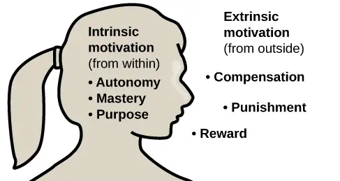
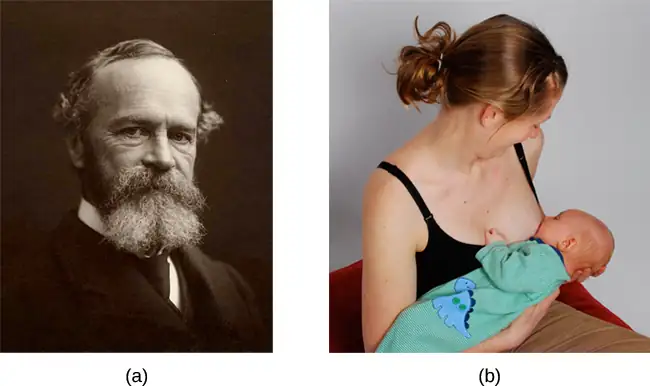
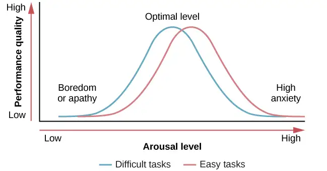
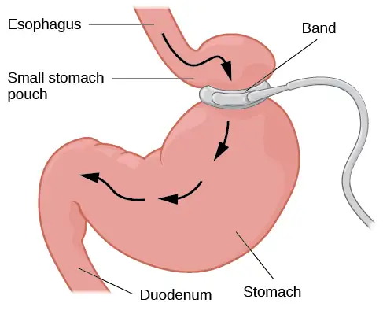
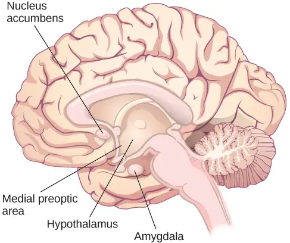
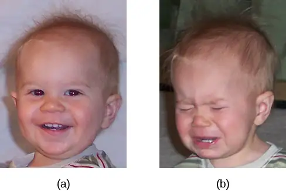
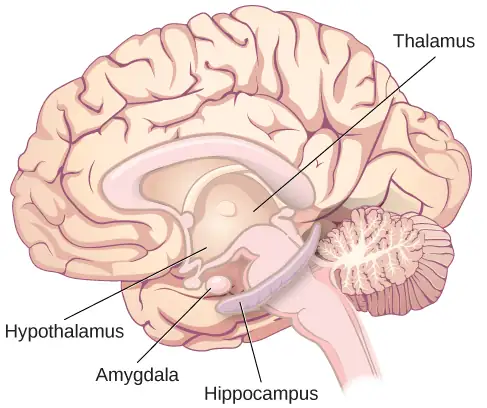
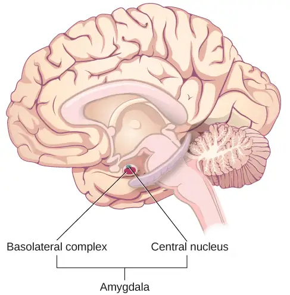
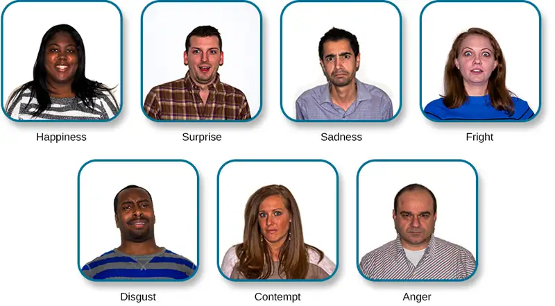

Chapter 10: Emotion and Motivation¶
Introduction¶
What makes us behave as we do? What drives us to eat? What drives us toward sex? Is there a biological basis to explain the feelings we experience? How universal are emotions?
In this chapter, we will explore issues relating to both motivation and emotion. We will begin with a discussion of several theories that have been proposed to explain motivation and why we engage in a given behavior. You will learn about the physiological needs that drive some human behaviors, as well as the importance of our social experiences in influencing our actions.
Next, we will consider both eating and having sex as examples of motivated behaviors. What are the physiological mechanisms of hunger and satiety? What understanding do scientists have of why eating disorders occur, and what treatments exist for them? How has research into human sex and sexuality evolved over the past century? How do psychologists understand and study the human experience of sexual orientation and gender identity? These questions—and more—will be explored.
This chapter will close with a discussion of emotion. You will learn about several theories that have been proposed to explain how emotion occurs, the biological underpinnings of emotion, and the universality of emotions.
10.1 Motivation¶
Learning Objectives
By the end of this section, you will be able to:
- Define intrinsic and extrinsic motivation
- Understand that instincts, drive reduction, self-efficacy, and social motives have all been proposed as theories of motivation
- Explain the basic concepts associated with Maslow’s hierarchy of needs
Why do we do the things we do? What motivations underlie our behaviors? Motivation describes the wants or needs that direct behavior toward a goal. In addition to biological motives, motivations can be intrinsic (arising from internal factors) or extrinsic (arising from external factors) (Figure 10.2). Intrinsically motivated behaviors are performed because of the sense of personal satisfaction that they bring, while extrinsically motivated behaviors are performed in order to receive something from others.

Think about why you are pursuing an education. Are you here because you enjoy learning and want to pursue an education to make yourself a more well-rounded individual? If so, then you are intrinsically motivated. However, if you are here because you want to get a college degree to make yourself more marketable for a high-paying career or to satisfy the demands of your parents, then your motivation is more extrinsic in nature.
In reality, our motivations are often a mix of both intrinsic and extrinsic factors, but the nature of the mix of these factors might change over time (often in ways that seem counter-intuitive). There is an old adage: “Choose a job that you love, and you will never have to work a day in your life,” meaning that if you enjoy your occupation, work doesn’t seem like . . . well, work. Some research suggests that this isn’t necessarily the case (Daniel & Esser, 1980; Deci, 1972; Deci, Koestner, & Ryan, 1999). According to this research, receiving some sort of extrinsic reinforcement (i.e., getting paid) for engaging in behaviors that we enjoy leads to those behaviors being thought of as work no longer providing that same enjoyment. As a result, we might spend less time engaging in these reclassified behaviors in the absence of any extrinsic reinforcement. For example, Odessa loves baking, so in her free time, she bakes for fun. Oftentimes, after stocking shelves at her grocery store job, she whips up pastries in the evenings because she enjoys baking. When a coworker in the store’s bakery department leaves his job, Odessa applies for his position and gets transferred to the bakery department. Although she enjoys what she does in her new job, after a few months, she no longer has much desire to concoct tasty treats in her free time. Baking has become work in a way that changes her motivation to do it (Figure 10.3). What Odessa has experienced is called the overjustification effect—intrinsic motivation is diminished when extrinsic motivation is given. This can lead to extinguishing the intrinsic motivation and creating a dependence on extrinsic rewards for continued performance (Deci et al., 1999).
Other studies suggest that intrinsic motivation may not be so vulnerable to the effects of extrinsic reinforcements, and in fact, reinforcements such as verbal praise might actually increase intrinsic motivation (Arnold, 1976; Cameron & Pierce, 1994). In that case, Odessa’s motivation to bake in her free time might remain high if, for example, customers regularly compliment her baking or cake decorating skills.
These apparent discrepancies in the researchers’ findings may be understood by considering several factors. For one, physical reinforcement (such as money) and verbal reinforcement (such as praise) may affect an individual in very different ways. In fact, tangible rewards (i.e., money) tend to have more negative effects on intrinsic motivation than do intangible rewards (i.e., praise). Furthermore, the expectation of the extrinsic motivator by an individual is crucial: If the person expects to receive an extrinsic reward, then intrinsic motivation for the task tends to be reduced. If, however, there is no such expectation, and the extrinsic motivation is presented as a surprise, then intrinsic motivation for the task tends to persist (Deci et al., 1999).
In addition, culture may influence motivation. For example, in collectivistic cultures, it is common to do things for your family members because the emphasis is on the group and what is best for the entire group, rather than what is best for any one individual (Nisbett, Peng, Choi, & Norenzayan, 2001). This focus on others provides a broader perspective that takes into account both situational and cultural influences on behavior; thus, a more nuanced explanation of the causes of others’ behavior becomes more likely. (You will learn more about collectivistic and individualistic cultures when you learn about social psychology.)
In educational settings, students are more likely to experience intrinsic motivation to learn when they feel a sense of belonging and respect in the classroom. This internalization can be enhanced if the evaluative aspects of the classroom are de-emphasized and if students feel that they exercise some control over the learning environment. Furthermore, providing students with activities that are challenging, yet doable, along with a rationale for engaging in various learning activities can enhance intrinsic motivation for those tasks (Niemiec & Ryan, 2009). Consider Hakim, a first-year law student with two courses this semester: Family Law and Criminal Law. The Family Law professor has a rather intimidating classroom: He likes to put students on the spot with tough questions, which often leaves students feeling belittled or embarrassed. Grades are based exclusively on quizzes and exams, and the instructor posts results of each test on the classroom door. In contrast, the Criminal Law professor facilitates classroom discussions and respectful debates in small groups. The majority of the course grade is not exam-based, but centers on a student-designed research project on a crime issue of the student’s choice. Research suggests that Hakim will be less intrinsically motivated in his Family Law course, where students are intimidated in the classroom setting, and there is an emphasis on teacher-driven evaluations. Hakim is likely to experience a higher level of intrinsic motivation in his Criminal Law course, where the class setting encourages inclusive collaboration and a respect for ideas, and where students have more influence over their learning activities.
Theories About Motivation¶
William James (1842–1910) was an important contributor to early research into motivation, and he is often referred to as the father of psychology in the United States. James theorized that behavior was driven by a number of instincts, which aid survival (Figure 10.4). From a biological perspective, an instinct is a species-specific pattern of behavior that is not learned. There was, however, considerable controversy among James and his contemporaries over the exact definition of instinct. James proposed several dozen special human instincts, but many of his contemporaries had their own lists that differed. A mother’s protection of her baby, the urge to lick sugar, and hunting prey were among the human behaviors proposed as true instincts during James’s era. This view—that human behavior is driven by instincts—received a fair amount of criticism because of the undeniable role of learning in shaping all sorts of human behavior. In fact, as early as the 1900s, some instinctive behaviors were experimentally demonstrated to result from associative learning (recall when you learned about Watson’s conditioning of fear response in “Little Albert”) (Faris, 1921).

Another early theory of motivation proposed that the maintenance of homeostasis is particularly important in directing behavior. You may recall from your earlier reading that homeostasis is the tendency to maintain a balance, or optimal level, within a biological system. In a body system, a control center (which is often part of the brain) receives input from receptors (which are often complexes of neurons). The control center directs effectors (which may be other neurons) to correct any imbalance detected by the control center.
According to the drive theory of motivation, deviations from homeostasis create physiological needs. These needs result in psychological drive states that direct behavior to meet the need and, ultimately, bring the system back to homeostasis. For example, if it’s been a while since you ate, your blood sugar levels will drop below normal. This low blood sugar will induce a physiological need and a corresponding drive state (i.e., hunger) that will direct you to seek out and consume food (Figure 10.5). Eating will eliminate the hunger, and, ultimately, your blood sugar levels will return to normal. Interestingly, drive theory also emphasizes the role that habits play in the type of behavioral response in which we engage. A habit is a pattern of behavior in which we regularly engage. Once we have engaged in a behavior that successfully reduces a drive, we are more likely to engage in that behavior whenever faced with that drive in the future (Graham & Weiner, 1996).
Extensions of drive theory take into account levels of arousal as potential motivators. As you recall from your study of learning, these theories assert that there is an optimal level of arousal that we all try to maintain (Figure 10.6). If we are underaroused, we become bored and will seek out some sort of stimulation. On the other hand, if we are overaroused, we will engage in behaviors to reduce our arousal (Berlyne, 1960). Most students have experienced this need to maintain optimal levels of arousal over the course of their academic career. Think about how much stress students experience toward the end of spring semester. They feel overwhelmed with seemingly endless exams, papers, and major assignments that must be completed on time. They probably yearn for the rest and relaxation that awaits them over the extended summer break. However, once they finish the semester, it doesn’t take too long before they begin to feel bored. Generally, by the time the next semester is beginning in the fall, many students are quite happy to return to school. This is an example of how arousal theory works.
![A line graph has an x-axis labeled “arousal level” with an arrow indicating “low” to “high” and a y-axis labeled “performance quality” with an arrow indicating “low” to “high.” A curve charts optimal arousal. Where arousal level and performance quality are both “low,” the curve is low and labeled “boredom or apathy.” Where arousal level is “medium” and “performance quality is “medium,” the curve peaks and is labeled “optimal level.” Where the arousal level is “high” and the performance quality is “low,” the curve is low and is labeled “high anxiety.”](img/cnx-psych-10-01-arousal.webp)
So what is the optimal level of arousal? What level leads to the best performance? Research shows that moderate arousal is generally best; when arousal is very high or very low, performance tends to suffer (Yerkes & Dodson, 1908). Think of your arousal level regarding taking an exam for this class. If your level is very low, such as boredom and apathy, your performance will likely suffer. Similarly, a very high level, such as extreme anxiety, can be paralyzing and hinder performance. Consider the example of a softball team facing a tournament. They are favored to win their first game by a large margin, so they go into the game with a lower level of arousal and get beat by a less skilled team.
But optimal arousal level is more complex than a simple answer that the middle level is always best. Researchers Robert Yerkes (pronounced “Yerk-EES”) and John Dodson discovered that the optimal arousal level depends on the complexity and difficulty of the task to be performed (Figure 10.7). This relationship is known as the Yerkes-Dodson law, which holds that a simple task is performed best when arousal levels are relatively high and complex tasks are best performed when arousal levels are lower.

Self-efficacy and Social Motives¶
Self-efficacy is an individual’s belief in their own capability to complete a task, which may include a previous successful completion of the exact task or a similar task. Albert Bandura (1994) theorized that an individual’s sense of self-efficacy plays a pivotal role in motivating behavior. Bandura argues that motivation derives from expectations that we have about the consequences of our behaviors, and ultimately, it is the appreciation of our capacity to engage in a given behavior that will determine what we do and the future goals that we set for ourselves. For example, if you have a sincere belief in your ability to achieve at the highest level, you are more likely to take on challenging tasks and to not let setbacks dissuade you from seeing the task through to the end.
A number of theorists have focused their research on understanding social motives (McAdams & Constantian, 1983; McClelland & Liberman, 1949; Murray et al., 1938). Among the motives they describe are needs for achievement, affiliation, and intimacy. It is the need for achievement that drives accomplishment and performance. The need for affiliation encourages positive interactions with others, and the need for intimacy causes us to seek deep, meaningful relationships. Henry Murray et al. (1938) categorized these needs into domains. For example, the need for achievement and recognition falls under the domain of ambition. Dominance and aggression were recognized as needs under the domain of human power, and play was a recognized need in the domain of interpersonal affection.
Maslow’s Hierarchy of Needs¶
While the theories of motivation described earlier relate to basic biological drives, individual characteristics, or social contexts, Abraham Maslow (1943) proposed a hierarchy of needs that spans the spectrum of motives ranging from the biological to the individual to the social. These needs are often depicted as a pyramid (Figure 10.8).

At the base of the pyramid are all of the physiological needs that are necessary for survival. These are followed by basic needs for security and safety, the need to be loved and to have a sense of belonging, and the need to have self-worth and confidence. The top tier of the pyramid is self-actualization, which is a need that essentially equates to achieving one’s full potential, and it can only be realized when needs lower on the pyramid have been met. To Maslow and humanistic theorists, self-actualization reflects the humanistic emphasis on positive aspects of human nature. Maslow suggested that this is an ongoing, life-long process and that only a small percentage of people actually achieve a self-actualized state (Francis & Kritsonis, 2006; Maslow, 1943).
According to Maslow (1943), one must satisfy lower-level needs before addressing those needs that occur higher in the pyramid. So, for example, if someone is struggling to find enough food to meet their nutritional requirements, it is quite unlikely that they would spend an inordinate amount of time thinking about whether others viewed them as a good person or not. Instead, all of their energies would be geared toward finding something to eat. However, it should be pointed out that Maslow’s theory has been criticized for its subjective nature and its inability to account for phenomena that occur in the real world (Leonard, 1982). Other research has more recently addressed that late in life, Maslow proposed a self-transcendence level above self-actualization—to represent striving for meaning and purpose beyond the concerns of oneself (Koltko-Rivera, 2006). For example, people sometimes make self-sacrifices in order to make a political statement or in an attempt to improve the conditions of others. Mohandas K. Gandhi, a world-renowned advocate for independence through nonviolent protest, on several occasions went on hunger strikes to protest a particular situation. People may starve themselves or otherwise put themselves in danger displaying higher-level motives beyond their own needs.
Link to Learning
Check out this interactive exercise about Maslow's hierarchy of needs to learn more.
10.2 Hunger and Eating¶
Learning Objectives
By the end of this section, you will be able to:
- Describe how hunger and eating are regulated
- Differentiate between levels of overweight and obesity and the associated health consequences
- Explain the health consequences resulting from anorexia and bulimia nervosa
Eating is essential for survival, and it is no surprise that a drive like hunger exists to ensure that we seek out sustenance. While this chapter will focus primarily on the physiological mechanisms that regulate hunger and eating, powerful social, cultural, and economic influences also play important roles. This section will explain the regulation of hunger, eating, and body weight, and we will discuss the adverse consequences of disordered eating.
Physiological Mechanisms¶
There are a number of physiological mechanisms that serve as the basis for hunger. When our stomachs are empty, they contract. Typically, a person then experiences hunger pangs. Chemical messages travel to the brain, and serve as a signal to initiate feeding behavior. When our blood glucose levels drop, the pancreas and liver generate a number of chemical signals that induce hunger (Konturek et al., 2003; Novin, Robinson, Culbreth, & Tordoff, 1985) and thus initiate feeding behavior.
For most people, once they have eaten, they feel satiation, or fullness and satisfaction, and their eating behavior stops. Like the initiation of eating, satiation is also regulated by several physiological mechanisms. As blood glucose levels increase, the pancreas and liver send signals to shut off hunger and eating (Drazen & Woods, 2003; Druce, Small, & Bloom, 2004; Greary, 1990). The food’s passage through the gastrointestinal tract also provides important satiety signals to the brain (Woods, 2004), and fat cells release leptin, a satiety hormone.
The various hunger and satiety signals that are involved in the regulation of eating are integrated in the brain. Research suggests that several areas of the hypothalamus and hindbrain are especially important sites where this integration occurs (Ahima & Antwi, 2008; Woods & D’Alessio, 2008). Ultimately, activity in the brain determines whether or not we engage in feeding behavior (Figure 10.9).
![An outline of the top half of a human body contains illustrations of the brain and the stomach in their relative locations. A line extends from the location of the hypothalamus in the brain illustration, out to the left, past the outline, where it meets a box labeled “Hunger.” Down-facing arrows connect that box to a box labeled “Food,” and the box labeled “Food” to a box labeled “Satiety.” A line extends out to the right from the box labeled “Satiety,” and meets with the illustration of the stomach.](img/cnx-psych-10-02-hunger.webp)
Metabolism and Body Weight¶
Our body weight is affected by a number of factors, including gene-environment interactions, and the number of calories we consume versus the number of calories we burn in daily activity. If our caloric intake exceeds our caloric use, our bodies store excess energy in the form of fat. If we consume fewer calories than we burn off, then stored fat will be converted to energy. Our energy expenditure is obviously affected by our levels of activity, but our body’s metabolic rate also comes into play. A person’s metabolic rate is the amount of energy that is expended in a given period of time, and there is tremendous individual variability in our metabolic rates. People with high rates of metabolism are able to burn off calories more easily than those with lower rates of metabolism.
We all experience fluctuations in our weight from time to time, but generally, most people’s weights fluctuate within a narrow margin, in the absence of extreme changes in diet and/or physical activity. This observation led some to propose a set-point theory of body weight regulation. The set-point theory asserts that each individual has an ideal body weight, or set point, which is resistant to change. This set-point is genetically predetermined and efforts to move our weight significantly from the set-point are resisted by compensatory changes in energy intake and/or expenditure (Speakman et al., 2011).
Some of the predictions generated from this particular theory have not received empirical support. For example, there are no changes in metabolic rate between individuals who had recently lost significant amounts of weight and a control group (Weinsier et al., 2000). In addition, the set-point theory fails to account for the influence of social and environmental factors in the regulation of body weight (Martin-Gronert & Ozanne, 2013; Speakman et al., 2011). Despite these limitations, set-point theory is still often used as a simple, intuitive explanation of how body weight is regulated. See Psychological Disorders for further discussion about eating disorders.
Obesity¶
When someone weighs more than what is generally accepted as healthy for a given height, they are considered overweight or obese. According to the Centers for Disease Control and Prevention (CDC), an adult with a body mass index (BMI) between 25 and 29.9 is considered overweight (Figure 10.10). An adult with a BMI of 30 or higher is considered obese (Centers for Disease Control and Prevention [CDC], 2012). People who are so overweight that they are at risk for death are classified as severely obese. Severe obesity is defined as having a BMI over 40. Note that although BMI has been used as a healthy weight indicator by the World Health Organization (WHO), the CDC, and other groups, its value as an assessment tool has been questioned. The BMI is most useful for studying populations, which is the work of these organizations. It is less useful in assessing an individual since height and weight measurements fail to account for important factors like fitness level. An athlete, for example, may have a high BMI because the tool doesn’t distinguish between the body’s percentage of fat and muscle in a person’s weight. BMI scales have not accounted for differences in body composition related to race or ethnicity; as a result, BMI is less useful in determining health of all people. While many healthcare professionals and organizations still utilize BMI, the American Medical Association in 2023 recommended that it be removed as a standard measure of health.
![A chart has an x-axis labeled “weight” (pounds/kilograms) and a y-axis labeled “height” (meters and feet/inches). Four areas are shaded different colors indicating the BMI for ranges of weight and height. The “underweight BMI <18.5” area begins at approximately 90 pounds and 4’11” and extends to approximately 160 pounds and 6’6”. The “normal range BMI 18.5–25” area covers approximately 90–120 pounds at height 4’11” and extends to approximately 160–220 pounds at height 6’6”. The “overweight BMI 25–30” area covers approximately 120–140 pounds at height 4’11” and extends to approximately 220–265 pounds at height 6’6”. The “obese range BMI >30” area covers approximately 140–350 pounds at height 4’11” and extends to approximately 265–350 pounds at height 6’6.”](img/cnx-psych-10-02-bodymass.webp)
Being extremely overweight or obese is a risk factor for several negative health consequences. These include, but are not limited to, an increased risk for cardiovascular disease, stroke, Type 2 diabetes, liver disease, sleep apnea, colon cancer, breast cancer, infertility, and arthritis. Given that it is estimated that in the United States around forty percent of the adult population is obese and that nearly three-quarters of adults and one in six children qualify as overweight (CDC, 2018), there is substantial interest in trying to understand how to combat this important public health concern.
What causes someone to be overweight or obese? You have already read that both genes and environment are important factors for determining body weight, and if more calories are consumed than expended, excess energy is stored as fat. However, socioeconomic status and the physical environment must also be considered as contributing factors (CDC, 2012). For example, an individual who lives in a neighborhood with high crime rates and few food options may never feel comfortable walking or biking to work or to the local market. This might limit the amount of physical activity in which they engage. Similarly, some people may not be able to afford healthy food options from their market, or these options may be unavailable (especially in urban areas or poorer neighborhoods); therefore, some people must rely primarily on available, inexpensive, high fat, and high calorie fast food as their primary source of nutrition.
Generally, people are encouraged to try to maintain and improve health through a combination of both diet and exercise. While some people are very successful with these approaches, many are not. In cases in which a person has had no success with repeated attempts to reduce weight or is at risk for death because of obesity, bariatric surgery may be recommended. Bariatric surgery is a type of surgery specifically aimed at weight reduction, and it involves modifying the gastrointestinal system to reduce the amount of food that can be eaten and/or limiting how much of the digested food can be absorbed (Figure 10.11) (Mayo Clinic, 2013). A recent meta-analysis suggests that bariatric surgery is more effective than non-surgical treatment for obesity in the two-years immediately following the procedure, but to date, no long-term studies yet exist (Gloy et al., 2013).

Link to Learning
Watch this video that describes two different types of bariatric surgeries to learn more.
Dig Deeper: Prader-Willi Syndrome
Prader-Willi Syndrome (PWS) is a genetic disorder that results in persistent feelings of intense hunger and reduced rates of metabolism. Typically, affected children have to be supervised around the clock to ensure that they do not engage in excessive eating. Currently, PWS is the leading genetic cause of severe obesity in children, and it is associated with a number of cognitive deficits and emotional problems (Figure 10.12).
While genetic testing can be used to make a diagnosis, there are a number of behavioral diagnostic criteria associated with PWS. From birth to 2 years of age, lack of muscle tone and poor sucking behavior may serve as early signs of PWS. Developmental delays are seen between the ages of 6 and 12, and excessive eating and cognitive deficits associated with PWS usually onset a little later.
While the exact mechanisms of PWS are not fully understood, there is evidence that affected individuals have hypothalamic abnormalities. This is not surprising, given the hypothalamus’s role in regulating hunger and eating. However, as you will learn in the next section of this chapter, the hypothalamus is also involved in the regulation of sexual behavior. Consequently, many individuals suffering from PWS fail to reach sexual maturity during adolescence.
There is no current treatment or cure for PWS. However, if weight can be controlled in these individuals, then their life expectancies are significantly increased (historically, sufferers of PWS often died in adolescence or early adulthood). Advances in the use of various psychoactive medications and growth hormones continue to enhance the quality of life for individuals with PWS (Cassidy & Driscoll, 2009; Prader-Willi Syndrome Association, 2012).
Eating Disorders¶
While nearly two out of three US adults struggle with issues related to being overweight, a smaller, but significant, portion of the population has eating disorders that typically result in being underweight. Often, these individuals are fearful of gaining weight. Individuals who have bulimia nervosa and anorexia nervosa face many adverse health consequences (Mayo Clinic, 2012a, 2012b).
People suffering from bulimia nervosa engage in binge eating behavior that is followed by an attempt to compensate for the large amount of food consumed. Purging the food by inducing vomiting or through the use of laxatives are two common compensatory behaviors. Some affected individuals engage in excessive amounts of exercise to compensate for their binges. Bulimia is associated with many adverse health consequences that can include kidney failure, heart failure, and tooth decay. In addition, these individuals often suffer from anxiety and depression, and they are at an increased risk for substance abuse (Mayo Clinic, 2012b). The lifetime prevalence rate for bulimia nervosa is estimated at around 1% for women and less than 0.5% for men (Smink, van Hoeken, & Hoek, 2012).
As of the 2013 release of the Diagnostic and Statistical Manual, fifth edition, Binge eating disorder is a disorder recognized by the American Psychiatric Association (APA). Unlike with bulimia, eating binges are not followed by inappropriate behavior, such as purging, but they are followed by distress, including feelings of guilt and embarrassment. The resulting psychological distress distinguishes binge eating disorder from overeating (American Psychiatric Association [APA], 2013).
Anorexia nervosa is an eating disorder characterized by the maintenance of a body weight well below average through starvation and/or excessive exercise. Individuals with anorexia nervosa often have a distorted body image, referenced in literature as a type of body dysmorphia, meaning that they view themselves as overweight even though they are not. Like bulimia nervosa, anorexia nervosa is associated with a number of significant negative health outcomes: bone loss, heart failure, kidney failure, amenorrhea (cessation of the menstrual period), reduced function of the gonads, and in extreme cases, death. Furthermore, there is an increased risk for a number of psychological problems, which include anxiety disorders, mood disorders, and substance abuse (Mayo Clinic, 2012a). Estimates of the prevalence of anorexia nervosa vary from study to study but generally range from just under one percent to just over four percent in women. Generally, prevalence rates are considerably lower for men (Smink et al., 2012).
Link to Learning
Watch this news story about an Italian advertising campaign to raise public awareness of anorexia nervosa to learn more.
While both anorexia and bulimia nervosa occur in people from many different cultures, White females from Western societies tend to be the most at-risk population. Recent research indicates that females between the ages of 15 and 19 are most at risk, and it has long been suspected that these eating disorders are culturally-bound phenomena that are related to messages of a thin ideal often portrayed in popular media and the fashion world (Figure 10.13) (Smink et al., 2012). While social factors play an important role in the development of eating disorders, there is also evidence that genetic factors may predispose people to these disorders (Collier & Treasure, 2004).
10.3 Sexual Behavior, Sexuality, and Gender Identity¶
Learning Objectives
By the end of this section, you will be able to:
- Understand basic biological mechanisms regulating sexual behavior and motivation
- Appreciate the importance of Alfred Kinsey’s research on human sexuality
- Recognize the contributions that William Masters and Virginia Johnson’s research made to our understanding of the sexual response cycle
- Define sexual orientation and gender identity
Like food, sex is an important part of many people's lives. From an evolutionary perspective, the reason is obvious—perpetuation of the species. Sexual behavior in humans, however, involves much more than reproduction. This section provides an overview of research that has been conducted on human sexual behavior and motivation. This section will close with a discussion of issues related to gender identity and expression and sexual orientation.
Physiological Mechanisms of Sexual Behavior and Motivation¶
Much of what we know about the physiological mechanisms that underlie sexual behavior and motivation comes from animal research. As you’ve learned, the hypothalamus plays an important role in motivated behaviors, and sex is no exception. In fact, lesions to an area of the hypothalamus called the medial preoptic area completely disrupt a male rat’s ability to engage in sexual behavior. Surprisingly, medial preoptic lesions do not change how hard a male rat is willing to work to gain access to a sexually receptive female (Figure 10.14). This suggests that the ability to engage in sexual behavior and the motivation to do so may be mediated by neural systems distinct from one another.
Animal research suggests that limbic system structures such as the amygdala and nucleus accumbens are especially important for sexual motivation. Damage to these areas results in a decreased motivation to engage in sexual behavior, while leaving the ability to do so intact (Figure 10.15) (Everett, 1990). Similar dissociations of sexual motivation and sexual ability have also been observed in the female rat (Becker, Rudick, & Jenkins, 2001; Jenkins & Becker, 2001).

Although human sexual behavior is much more complex than that seen in rats, some parallels between animals and humans can be drawn from this research. The worldwide popularity of drugs used to treat erectile dysfunction (Conrad, 2005) speaks to the fact that sexual motivation and the ability to engage in sexual behavior can also be dissociated in humans. Moreover, disorders that involve abnormal hypothalamic function are often associated with hypogonadism (reduced function of the gonads) and reduced sexual function (e.g., Prader-Willi syndrome). Given the hypothalamus’s role in endocrine function, it is not surprising that hormones secreted by the endocrine system also play important roles in sexual motivation and behavior. For example, many animals show no sign of sexual motivation in the absence of the appropriate combination of sex hormones from their gonads. While this is not the case for humans, there is considerable evidence that sexual motivation for all genders varies as a function of circulating testosterone levels (Bhasin, Enzlin, Coviello, & Basson, 2007; Carter, 1992; Sherwin, 1988).
Kinsey’s Research¶
Before the late 1940s, access to reliable, empirically-based information on sex was limited. Physicians were considered authorities on all issues related to sex, despite the fact that they had little to no training in these issues, and it is likely that most of what people knew about sex had been learned either through their own experiences or by talking with their peers. Convinced that people would benefit from a more open dialogue on issues related to human sexuality, Dr. Alfred Kinsey of Indiana University initiated large-scale survey research on the topic (Figure 10.16). The results of some of these efforts were published in two books—Sexual Behavior in the Human Male and Sexual Behavior in the Human Female—which were published in 1948 and 1953, respectively (Bullough, 1998).
At the time, the Kinsey reports were quite sensational. Never before had the American public seen its private sexual behavior become the focus of scientific scrutiny on such a large scale. The books, which were filled with statistics and scientific lingo, sold remarkably well to the general public, and people began to engage in open conversations about human sexuality. As you might imagine, not everyone was happy that this information was being published. In fact, these books were banned in some countries. Ultimately, the controversy resulted in Kinsey losing funding that he had secured from the Rockefeller Foundation to continue his research efforts (Bancroft, 2004).
Although Kinsey’s research has been widely criticized as being riddled with sampling and statistical errors (Jenkins, 2010), there is little doubt that this research was very influential in shaping future research on human sexual behavior and motivation. Kinsey described a remarkably diverse range of sexual behaviors and experiences reported by the volunteers participating in his research. Behaviors that had once been considered exceedingly rare or problematic were demonstrated to be much more common and innocuous than previously imagined (Bancroft, 2004; Bullough, 1998).
Link to Learning
Watch this trailer for the 2004 film Kinsey that depicts Alfred Kinsey's life and research to learn more.
Among the results of Kinsey’s research were the findings that women are as interested and experienced in sex as men, that both males and females masturbate without adverse health consequences, and that relationships and sexual acts between people of the same sex and/or the same gender are fairly common (Bancroft, 2004). Kinsey also developed a continuum known as the Kinsey scale that is still commonly used today to categorize an individual’s sexual orientation, which is an individual’s emotional, romantic, and erotic attractions to other people or no people (Jenkins, 2010).
Masters and Johnson’s Research¶
In 1966, William Masters and Virginia Johnson published a book detailing the results of their observations of nearly 700 people who agreed to participate in their study of physiological responses during sexual behavior. Unlike Kinsey, who used personal interviews and surveys to collect data, Masters and Johnson observed people having intercourse in a variety of positions, and they observed people masturbating, manually or with the aid of a device. While this was occurring, researchers recorded measurements of physiological variables, such as blood pressure and respiration rate, as well as measurements of sexual arousal, such as vaginal lubrication and penile tumescence (swelling associated with an erection). In total, Masters and Johnson observed nearly 10,000 sexual acts as a part of their research (Hock, 2008).
Based on these observations, Masters and Johnson divided the sexual response cycle into four phases that are fairly similar for most people: excitement, plateau, orgasm, and resolution (Figure 10.17). The excitement phase is the arousal phase of the sexual response cycle, and it is marked by erection of the penis or clitoris and lubrication and expansion of the vaginal canal. During plateau, the vagina swells further and blood flow to the labia minora increases, and the penis becomes fully erect and may exhibit pre-ejaculatory fluid. People experience increases in muscle tone during this time. Orgasm is marked in females by rhythmic contractions of the pelvis and uterus along with increased muscle tension. In males, pelvic contractions are accompanied by a buildup of seminal fluid near the urethra that is ultimately forced out by contractions of genital muscles, (i.e., ejaculation). Resolution is the relatively rapid return to an unaroused state accompanied by a decrease in blood pressure and muscular relaxation. The refractory period is a period of time that follows an orgasm during which an individual is incapable of experiencing another orgasm. The duration of the refractory period can vary dramatically from individual to individual with some refractory periods as short as several minutes and others as long as a day. As people age, their refractory periods tend to span longer periods of time.
![A graph titled “Sexual response cycle” has an x-axis labeled “time” and a y-axis labeled “arousal.” Four phases are depicted. In the “excitement” phase the arousal level increases from the bottom to midway on the graph. In the “plateau” phase the arousal level remains mostly steady at the midpoint of the graph and then begins to rise at the end of the plateau phase. At the “orgasm” phase, the arousal level sharply increases, peaks at the top of the graph, and then declines to the midway point. In the “resolution” phase the graph drops from the midway point to the bottom.](img/cnx-psych-10-03-sexresponse.webp)
In addition to the insights that their research provided with regards to the sexual response cycle and the multi-orgasmic potential of females, Masters and Johnson also collected important information about reproductive anatomy. Their research demonstrated the oft-cited statistic of the average size of a flaccid and an erect penis (3 and 6 inches, respectively) as well as dispelling long-held beliefs about relationships between the size of an erect penis and its ability to provide sexual pleasure to a partner. Furthermore, they determined that the vagina is a very elastic structure that can conform to penises of various sizes (Hock, 2008). In a similar manner to Kinsey’s work and other studies, Masters and Johnson’s research has been criticized, built on, and in some cases proven wrong. The research represents an important element of the history of sexual research, and is not viewed as entirely accurate today.
Sexual Orientation¶
As mentioned earlier, a person’s sexual orientation is their emotional, romantic, and/or erotic attraction toward other people or no people. People may identify as lesbian, gay, bisexual, pansexual, asexual, heterosexual (straight), or other sexualities. Lesbian and gay people are attracted to people of the same gender or sex; bisexual people are attracted to people of their own gender and another gender; pansexual people experience attraction without regard to sex, gender identity or gender expression; asexual people do not experience sexual attraction or have little or no interest in sexual activity; heterosexual (or straight) people experience attraction to people of a different gender or sex. Other descriptive terms may not refer to a sexual attraction, but rather a romantic one. For example, an aromantic person does not experience romantic attraction; this is different from asexuality, which refers to a lack of sexual attraction. And some sexual orientations do not refer to gender in their description (PFLAG, 2021). It is important to acknowledge and understand that many of these orientations exist on on a spectrum, and there may be no specific term to describe how an individual feels.
Some of these terms have been associated in abbreviations such as LGBTQ (lesbian, gay, bisexual, transgender, and queer or questioning). (Queer is an umbrella term that some LGBTQ people use to describe themselves; questioning refers to people in a process of discovery regarding their gender identity or sexual orientation.) In some cases, people and organizations may add "I" to represent intersex people (described below), and "A" for asexual or aromantic people (or sometimes for "allies"), as well as one "P" to describe pansexual people and sometimes another "P" to describe polysexual people. Finally, some people and organizations add a plus sign (+) to represent other possible identities or orientations. Sexuality and gender terminology are constantly changing, and may mean different things to different people; they are not universal, and each individual defines them for themselves (UC Davis LGBTQIA Resource Center 2020).
For many years, people—including scientists—believed that sexual orientation was largely determined by socialization and familial experiences. However, research has consistently demonstrated that the family backgrounds and experiences are very similar among straight people and LGBTQ people (Bell, Weinberg, & Hammersmith, 1981; Ross & Arrindell, 1988).
Genetic and biological mechanisms have also been proposed, and the balance of research evidence suggests that sexual orientation has an underlying biological component. For instance, over the past 25 years, research has demonstrated gene-level contributions to sexual orientation (Bailey & Pillard, 1991; Hamer, Hu, Magnuson, Hu, & Pattatucci, 1993; Rodriguez-Larralde & Paradisi, 2009), with some researchers estimating that genes account for at least half of the variability seen in human sexual orientation (Pillard & Bailey, 1998). Other studies report differences in brain structure and function among those with different sexual orientations (Allen & Gorski, 1992; Byne et al., 2001; Hu et al., 2008; LeVay, 1991; Ponseti et al., 2006; Rahman & Wilson, 2003a; Swaab & Hofman, 1990), and even differences in basic body structure and function have been observed (Hall & Kimura, 1994; Lippa, 2003; Loehlin & McFadden, 2003; McFadden & Champlin, 2000; McFadden & Pasanen, 1998; Rahman & Wilson, 2003b). In aggregate, the data suggest that to a significant extent, sexual orientations are something with which we are born.
Misunderstandings About Sexual Orientation¶
Regardless of how sexual orientation is determined, research has made clear that sexual orientation is not a choice, but rather it is a relatively stable characteristic of a person that cannot be changed. Claims of effective conversion therapy have received wide criticism from the research community due to significant concerns with research design, recruitment of experimental participants, and interpretation of data. As such, there is no credible scientific evidence to suggest that individuals can change their sexual orientation (Jenkins, 2010).
Dr. Robert Spitzer, the author of one of the most widely-cited examples of conversion therapy, apologized to both the scientific community and the LGBTQ community for his mistakes, and he publically recanted his own paper in a public letter addressed to the editor of Archives of Sexual Behavior in the spring of 2012 (Carey, 2012). In this letter, Spitzer wrote,
I was considering writing something that would acknowledge that I now judge the major critiques of the study as largely correct. . . . I believe I owe the gay community an apology for my study making unproven claims of the efficacy of reparative therapy. I also apologize to any gay person who wasted time or energy undergoing some form of reparative therapy because they believed that I had proven that reparative therapy works with some “highly motivated” individuals. (Becker, 2012, pars. 2, 5)
Citing research that suggests not only that conversion therapy is ineffective, but also potentially harmful, legislative efforts to make such therapy illegal have either been enacted or are underway across the United States, and many professional organizations have issued statements against this practice (Human Rights Campaign, n.d.)
Link to Learning
Read this article about Dr. Spitzer's apology to learn more.
Gender Identity¶
Many people conflate sexual orientation with gender identity because of misconceptions and attitudes that exist about sexuality. In reality, these are two related, but different, aspects of who we are. Gender identity refers to one’s sense of being male, female, neither of these, both of these, or another gender. Generally, our gender identities correspond to our chromosomal and phenotypic sex, but this is not always the case. Transgender people’s gender identity differs from the sex they were assigned at birth. Transgender people may use a range of terms to describe themselves, including abbreviations (e.g. trans) or terms such as non-binary.
When individuals do not feel comfortable identifying with the gender associated with their biological sex, then they may experience gender dysphoria. Gender dysphoria is a diagnostic category in the fifth edition of the Diagnostic and Statistical Manual of Mental Disorders (DSM-5) that describes individuals who do not identify as the gender that most people would assume they are. This dysphoria must persist for at least six months and result in significant distress or dysfunction to meet DSM-5 diagnostic criteria. In order for children to be assigned this diagnostic category, they must verbalize their desire to become another gender. It is important to note that not all transgender people experience gender dysphoria, and that its diagnostic categorization is not universally accepted. For example, in 2019, the World Health Organization reclassified “gender identity disorder” as “gender incongruence,” and categorized it under sexual health rather than a mental disorder. However, health and mental health professionals indicate that the presence of the diagnostic category does assist in supporting those who need treatment or help.
Some transgender individuals may undertake a process of transition, in which they move from living in a way that is more aligned with the sex assigned at birth to living in a way that is aligned with their gender identity. Transitioning may take the form of social, legal, or medical aspects of someone's life, but not everyone undertakes any or all types of transition. Social transition may involve the person's presentation, name, pronouns, and relationships. Legal transition can include changing their gender on government or other official documents, changing their legal name, and so on. Some people may undergo a physical or medical transition, in which they change their outward, physical, or sexual characteristics in order for their physical being to better align with their gender identity (UCSF Transgender Care 2019). Not all transgender individuals choose to alter their bodies: many will maintain their original anatomy but may present themselves to society as another gender. This is typically done by adopting the dress, hairstyle, mannerisms, or other characteristics typically assigned to another gender. It is important to note that people who cross-dress, or wear clothing that is traditionally assigned to a gender different from their biological sex, are not necessarily transgender. Cross-dressing is typically a form of self-expression or personal style, and it does not indicate a person's gender identity or that they are transgender (TSER 2021).
Intersex is a general term used to describe people whose sex traits, reproductive anatomy, hormones, or chromosomes are different from the usual two ways human bodies develop. Some intersex traits are recognized at birth, while others are not recognizable until puberty or later in life (interACT 2021). Intersex and transgender are not interchangeable terms; many transgender people have no intersex traits, and many intersex people do not consider themselves transgender.
Those who identify with the sex they were assigned at birth are often referred to as cisgender, utilizing the Latin prefix "cis," which means "on the same side." (The prefix "trans" means "across.") Many cisgender people do not self-identify as such. As with transgender people, the term or usage of cisgender does not indicate a person's sexual orientation, gender, or gender expression (TSER 2021).
Our scientific knowledge and general understanding about gender identity continue to evolve, and people today have more opportunity to explore and openly express different ideas about what gender means than previous generations. Recent studies indicate that the majority of millennials (those ages 18–34) regard gender as a spectrum instead of a strict male/female binary, and that 12% identify as transgender or gender non-conforming. Additionally, more people know others who use gender-neutral pronouns (such as they/them) (Kennedy, 2017). This change in language may indicate that millennials and Generation Z people understand the experience of gender itself differently. As young people lead this change, other changes are emerging in a range of spheres, from public bathroom policies to retail organizations. For example, some retailers are starting to change traditional gender-based marketing of products, such as removing “pink and blue” clothing and toy aisles. Even with these changes, those who exist outside of traditional gender norms face difficult challenges. Even people who vary slightly from traditional norms are often the target of discrimination and violence.
Link to Learning
Hear firsthand about the transgender experience and overcoming challenges in the face of discrimination and violence. Watch this brief interview with Carmen Carrera and Laverne Cox on Katie Couric's talk show to learn more. This video about transgender immigrants' experiences explains more struggles faced globally by those in the transgender community.
Cultural Factors in Sexual Orientation and Gender Identity¶
Issues related to sexual orientation and gender identity are very much influenced by sociocultural factors. Even the ways in which we define sexual orientation and gender vary from one culture to the next. While in the United States heterosexuality has historically been viewed as the norm (making it a heteronormative society), there are societies that have different attitudes regarding LGBTQ people. In fact, in some instances, periods of exclusively same-sex sexual behavior are socially prescribed as a part of normal development and maturation. For example, in parts of New Guinea, young boys are expected to engage in sexual behavior with other boys for a given period of time because it is believed that doing so is necessary for these boys to become men (Baldwin & Baldwin, 1989).
There has historically been a two-gendered culture in the United States. We have tended to classify an individual as either male or female according to the sex they were assigned at birth, leading the United States to be considered a cisnormative society. However, in some cultures there are additional genders resulting in more than two gender categories. Some of these identities have been core parts of societies for hundreds or thousands of years, and they carry a deep connection for the culture. For example, the Bugis people in Indonesia have for centuries recognized a gender spectrum that includes at least five identities. One of these, the bissu, are important spiritual figures in the society, and play roles in ceremonies such as weddings and coronations (Davies, 2018). Despite this, these groups may still be persecuted or endure stigma, particularly as cultural, religious, or governmental circumstances change in their regions (Ibrahim, 2019). It is important to consider that many prominent non-binary identities from cultures around the world predate contemporary definitions of gender and gender roles.
Dig Deeper: The Case of David Reimer
In August of 1965, Janet and Ronald Reimer of Winnipeg, Canada, welcomed the birth of their twin sons, Bruce and Brian. Within a few months, the twins were experiencing urinary problems; doctors recommended the problems could be alleviated by having the boys circumcised. A malfunction of the medical equipment used to perform the circumcision resulted in Bruce’s penis being irreparably damaged. Distraught, Janet and Ronald looked to expert advice on what to do with their baby boy. By happenstance, the couple became aware of Dr. John Money at Johns Hopkins University and his theory of psychosexual neutrality (Colapinto, 2000).
Dr. Money had spent a considerable amount of time researching transgender individuals and individuals born with ambiguous genitalia. As a result of this work, he developed a theory of psychosexual neutrality. His theory asserted that we are essentially neutral at birth with regard to our gender identity and that we don’t assume a concrete gender identity until we begin to master language. Furthermore, Dr. Money believed that the way in which we are socialized in early life is ultimately much more important than our biology in determining our gender identity (Money, 1962).
Dr. Money encouraged Janet and Ronald to bring the twins to Johns Hopkins University, and he convinced them that they should raise Bruce as a girl. Left with few other options at the time, Janet and Ronald agreed to have Bruce’s testicles removed and to raise him as a girl. When they returned home to Canada, they brought with them Brian and his “sister,” Brenda, along with specific instructions to never reveal to Brenda that she had been born a boy (Colapinto, 2000).
Early on, Dr. Money shared with the scientific community the great success of this natural experiment that seemed to fully support his theory of psychosexual neutrality (Money, 1975). Indeed, in early interviews with the children it appeared that Brenda was a typical little girl who liked to play with “girly” toys and do “girly” things.
However, Dr. Money was less than forthcoming with information that seemed to argue against the success of the case. In reality, Brenda’s parents were constantly concerned that their little girl wasn’t really behaving as most girls did, and by the time Brenda was nearing adolescence, it was painfully obvious to the family that she was really having a hard time identifying as a female. In addition, Brenda was becoming increasingly reluctant to continue her visits with Dr. Money to the point that she threatened suicide if her parents made her go back to see him again.
At that point, Janet and Ronald disclosed the true nature of Brenda’s early childhood to their daughter. While initially shocked, Brenda reported that things made sense to her now, and ultimately, by the time she was an adolescent, Brenda had decided to identify as a male. Thus, she became David Reimer.
David was quite comfortable in his masculine role. He made new friends and began to think about his future. Although his castration had left him infertile, he still wanted to be a father. In 1990, David married a single mother and loved his new role as a husband and father. In 1997, David was made aware that Dr. Money was continuing to publicize his case as a success supporting his theory of psychosexual neutrality. This prompted David and his brother to go public with their experiences in an attempt to discredit the doctor’s publications. While this revelation created a firestorm in the scientific community for Dr. Money, it also triggered a series of unfortunate events that ultimately led to David dying by suicide in 2004 (O’Connell, 2004).
This sad story speaks to the complexities involved in gender identity. While the Reimer case had earlier been paraded as a hallmark of how socialization trumped biology in terms of gender identity, the truth of the story made the scientific and medical communities more cautious in dealing with cases that involve intersex children and how to deal with their unique circumstances. In fact, stories like this one have prompted measures to prevent unnecessary harm and suffering to children who might have issues with gender identity. For example, in 2013, a law took effect in Germany allowing parents of intersex children to classify their children as indeterminate so that children can self-assign the appropriate gender once they have fully developed their own gender identities (Paramaguru, 2013).
Link to Learning
Watch this news story about the experiences of David Reimer and his family to learn more.
10.4 Emotion¶
Learning Objectives
By the end of this section, you will be able to:
- Explain the major theories of emotion
- Describe the role that limbic structures play in emotional processing
- Understand the ubiquitous nature of producing and recognizing emotional expression
As we move through our daily lives, we experience a variety of emotions. An emotion is a subjective state of being that we often describe as our feelings. Emotions result from the combination of subjective experience, expression, cognitive appraisal, and physiological responses (Levenson, Carstensen, Friesen, & Ekman, 1991). However, as discussed later in the chapter, the exact order in which the components occur is not clear, and some parts may happen at the same time. An emotion often begins with a subjective (individual) experience, which is a stimulus. Often the stimulus is external, but it does not have to be from the outside world. For example, it might be that one thinks about war and becomes sad, even though they never experienced war. Emotional expression refers to the way one displays an emotion and includes nonverbal and verbal behaviors (Gross, 1999). One also performs a cognitive appraisal in which a person tries to determine the way they will be impacted by a situation (Roseman & Smith, 2001). In addition, emotions include physiological responses, such as possible changes in heart rate, sweating, etc. (Soussignan, 2002).
The words emotion and mood are sometimes used interchangeably, but psychologists use these words to refer to two different things. Typically, the word emotion indicates a subjective, affective state that is relatively intense and that occurs in response to something we experience (Figure 10.20). Emotions are often thought to be consciously experienced and intentional. Mood, on the other hand, refers to a prolonged, less intense, affective state that does not occur in response to something we experience. Mood states may not be consciously recognized and do not carry the intentionality that is associated with emotion (Beedie, Terry, Lane, & Devonport, 2011). Here we will focus on emotion, and you will learn more about mood in the chapter that covers psychological disorders.

We can be at the heights of joy or in the depths of despair. We might feel angry when we are betrayed, fear when we are threatened, and surprised when something unexpected happens. This section will outline some of the most well-known theories explaining our emotional experience and provide insight into the biological bases of emotion. This section closes with a discussion of the ubiquitous nature of facial expressions of emotion and our abilities to recognize those expressions in others.
Theories of Emotion¶
Our emotional states are combinations of physiological arousal, psychological appraisal, and subjective experiences. Together, these are the components of emotion, and our experiences, backgrounds, and cultures inform our emotions. Therefore, different people may have different emotional experiences even when faced with similar circumstances. Over time, several different theories of emotion, shown in Figure 10.21, have been proposed to explain how the various components of emotion interact with one another.
![A diagram shows a photograph of a snake on the left and a photograph of a frightened person on the right, with an arrow labeled “time.” Beneath the photos are flow diagrams of four theories of emotion. In the “James-Lange theory,” a box labeled “arousal (snake)” leads to a box labeled “heart pounding, sweating,” which leads to a box labeled “fear (emotion).” In the “Cannon-Bard theory,” a box labeled “arousal (snake)” splits into two boxes labeled “heart pounding, sweating,” and “fear (emotion).” In the “Schachter-Singer Two-Factor theory,” a box labeled “arousal (snake)” leads to two boxes labeled “heart pounding, sweating” and cognitive label (“I’m scared)” which then lead to a single box labeled “fear (emotion).” In the “Lazarus’ Cognitive-mediational theory,” a box labeled “arousal (snake)” leads to a box labeled “appraisal,” which leads to a box labeled “fear/heart pounding, sweating.”](img/cnx-psych-10-04-theories.webp)
The James-Lange theory of emotion asserts that emotions arise from physiological arousal. Recall what you have learned about the sympathetic nervous system and our fight or flight response when threatened. If you were to encounter some threat in your environment, like a venomous snake in your backyard, your sympathetic nervous system would initiate significant physiological arousal, which would make your heart race and increase your respiration rate. According to the James-Lange theory of emotion, you would only experience a feeling of fear after this physiological arousal had taken place. Furthermore, different arousal patterns would be associated with different feelings.
Other theorists, however, doubted that the physiological arousal that occurs with different types of emotions is distinct enough to result in the wide variety of emotions that we experience. Thus, the Cannon-Bard theory of emotion was developed. According to this view, physiological arousal and emotional experience occur simultaneously, yet independently (Lang, 1994). So, when you see the venomous snake, you feel fear at exactly the same time that your body mounts its fight or flight response. This emotional reaction would be separate and independent of the physiological arousal, even though they co-occur.
Does smiling make you happy? Alternatively, does being happy make you smile? The facial feedback hypothesis proposes that your facial expression can actually affect your emotional experience (Adelman & Zajonc, 1989; Boiger & Mesquita, 2012; Buck, 1980; Capella, 1993; Soussignan, 2001). Research investigating the facial feedback hypothesis suggested that suppression of facial expression of emotion lowered the intensity of some emotions experienced by participants (Davis, Senghas, & Ochsner, 2009). Havas, Glenberg, Gutowski, Lucarelli, and Davidson (2010) used Botox injections to paralyze facial muscles and limit facial expressions, including frowning, and they found that depressed people reported less depression after their frowning muscles were paralyzed. Other research found that the intensities of facial expressions affected the emotional reactions (Soussignan, 2002). In other words, if something insignificant occurs and you smile as if you just won lottery, you will actually be happier about the little thing than you would be if you only had a tiny smile. Conversely, if you walk around frowning all the time, it might cause you to have less positive emotions than you would if you had smiled. Interestingly, Soussignan (2002) also reported physiological arousal differences associated with the intensities of one type of smile.
G. Marañon Posadillo was a Spanish physician who studied the psychological effects of adrenaline to create a model for the experience of emotion. Marañon's model preceded Schachter's two-factor or arousal-cognition theory of emotion (Cornelius, 1991). The Schachter-Singer two-factor theory of emotion is another variation on theories of emotions that takes into account both physiological arousal and the emotional experience. According to this theory, emotions are composed of two factors: physiological and cognitive. In other words, physiological arousal is interpreted in context to produce the emotional experience. In revisiting our example involving the venomous snake in your backyard, the two-factor theory maintains that the snake elicits sympathetic nervous system activation that is labeled as fear given the context, and our experience is that of fear. If you had labeled your sympathetic nervous system activation as joy, you would have experienced joy. The Schachter-Singer two-factor theory depends on labeling the physiological experience, which is a type of cognitive appraisal.
Magda Arnold was the first theorist to offer an exploration of the meaning of appraisal, and to present an outline of what the appraisal process might be and how it relates to emotion (Roseman & Smith, 2001). The key idea of appraisal theory is that you have thoughts (a cognitive appraisal) before you experience an emotion, and the emotion you experience depends on the thoughts you had (Frijda, 1988; Lazarus, 1991). If you think something is positive, you will have more positive emotions about it than if your appraisal was negative, and the opposite is true. Appraisal theory explains the way two people can have two completely different emotions regarding the same event. For example, suppose your psychology instructor selected you to lecture on emotion; you might see that as positive, because it represents an opportunity to be the center of attention, and you would experience happiness. However, if you dislike speaking in public, you could have a negative appraisal and experience discomfort.
Schachter and Singer believed that physiological arousal is very similar across the different types of emotions that we experience, and therefore, the cognitive appraisal of the situation is critical to the actual emotion experienced. In fact, it might be possible to misattribute arousal to an emotional experience if the circumstances were right (Schachter & Singer, 1962). They performed a clever experiment to test their idea. A group of men participating in the experiment were randomly assigned to one of several groups. Some of the participants received injections of epinephrine that caused bodily changes that mimicked the fight-or-flight response of the sympathetic nervous system; however, only some of these men were told to expect these reactions as side effects of the injection. The other men that received injections of epinephrine were told either that the injection would have no side effects or that it would result in a side effect unrelated to a sympathetic response, such as itching feet or headache. After receiving these injections, participants waited in a room with someone else they thought was another subject in the research project. In reality, the other person was a confederate (someone working on behalf) of the researcher. The confederate engaged in scripted displays of euphoric or angry behavior (Schachter & Singer, 1962).
When those participants who were told that they should expect to feel symptoms of physiological arousal were asked about any emotional changes that they had experienced related to either euphoria or anger (depending on the way the confederate behaved), they reported none. However, the men who weren’t expecting physiological arousal as a function of the injection were more likely to report that they experienced euphoria or anger as a function of their assigned confederate’s behavior. While everyone who received an injection of epinephrine experienced the same physiological arousal, only those who were not expecting the arousal used context to interpret the arousal as a change in emotional state (Schachter & Singer, 1962).
Strong emotional responses are associated with strong physiological arousal, which caused some theorists to suggest that the signs of physiological arousal, including increased heart rate, respiration rate, and sweating, might be used to determine whether someone is telling the truth or not. The assumption is that most of us would show signs of physiological arousal if we were being dishonest with someone. A polygraph, or lie detector test, measures the physiological arousal of an individual responding to a series of questions. Someone trained in reading these tests would look for answers to questions that are associated with increased levels of arousal as potential signs that the respondent may have been dishonest on those answers. While polygraphs are still commonly used, their validity and accuracy are highly questionable because there is no evidence that lying is associated with any particular pattern of physiological arousal (Saxe & Ben-Shakhar, 1999).
The relationship between our experiencing of emotions and our cognitive processing of them, and the order in which these occur, remains a topic of research and debate. Lazarus (1991) developed the cognitive-mediational theory that asserts our emotions are determined by our appraisal of the stimulus. This appraisal mediates between the stimulus and the emotional response, and it is immediate and often unconscious. In contrast to the Schachter-Singer model, the appraisal precedes a cognitive label. You will learn more about Lazarus’s appraisal concept when you study stress, health, and lifestyle. However, there are other views of emotions that also emphasize the cognitive processes.
Return to the example of being asked to lecture by your professor. Even if you do not enjoy speaking in public, you probably could manage to do it. You would purposefully control your emotions, which would allow you to speak, but we constantly regulate our emotions, and much of our emotion regulation occurs without us actively thinking about it. Mauss and her colleagues studied automatic emotion regulation (AER), which refers to the non-deliberate control of emotions. It is simply not reacting with your emotions, and AER can affect all aspects of emotional processes. AER can influence the things you attend to, your appraisal, your choice to engage in an emotional experience, and your behaviors after an emotion is experienced (Mauss, Bunge, & Gross, 2007; Mauss, Levenson, McCarter, Wilhelm, & Gross, 2005). AER is similar to other automatic cognitive processes in which sensations activate knowledge structures that affect functioning. These knowledge structures can include concepts, schemas, or scripts.
The idea of AER is that people develop an automatic process that works like a script or schema, and the process does not require deliberate thought to regulate emotions. AER works like riding a bicycle. Once you develop the process, you just do it without thinking about it. AER can be adaptive or maladaptive and has important health implications (Hopp, Troy, & Mauss, 2011). Adaptive AER leads to better health outcomes than maladaptive AER, primarily due to experiencing or mitigating stressors better than people with maladaptive AERs (Hopp, Troy, & Mauss, 2011). Alternatively, maladaptive AERs may be critical for maintaining some psychological disorders (Hopp, Troy, & Mauss, 2011). Mauss and her colleagues found that strategies could reduce negative emotions, which in turn should increase psychological health (Mauss, Cook, Cheng, & Gross, 2007; Mauss, Cook, & Gross, 2007; Shallcross, Troy, Boland, & Mauss, 2010; Troy, Shallcross, & Mauss, 2013; Troy, Wilhelm, Shallcross, & Mauss, 2010). Mauss has also suggested there are problems with the way emotions are measured, but she believes most of the aspects of emotions that are typically measured are useful (Mauss, et al., 2005; Mauss & Robinson, 2009). However, another way of considering emotions challenges our entire understanding of emotions.
After about three decades of interdisciplinary research, Barrett argued that we do not understand emotions. She proposed that emotions were not built into your brain at birth, but rather they were constructed based on your experiences. Emotions in the constructivist theory are predictions that construct your experience of the world. In the chapter on Thinking and Intelligence you learned that concepts are categories or groupings of linguistic information, images, ideas, or memories, such as life experiences. Barrett extended that to include emotions as concepts that are predictions (Barrett, 2017). Two identical physiological states can result in different emotional states depending on your predictions. For example, your brain predicting a churning stomach in a bakery could lead to you constructing hunger. However, your brain predicting a churning stomach while you were waiting for medical test results could lead your brain to construct worry. Thus, you can construct two different emotions from the same physiological sensations. Rather than emotions being something over which you have no control, you can control and influence your emotions.
Link to Learning
Watch this video in which Dr. Barrett explains constructed emotions to learn more.
Two other prominent views arise from the work of Robert Zajonc and Joseph LeDoux. Zajonc asserted that some emotions occur separately from or prior to our cognitive interpretation of them, such as feeling fear in response to an unexpected loud sound (Zajonc, 1998). He also believed in what we might casually refer to as a gut feeling—that we can experience an instantaneous and unexplainable like or dislike for someone or something (Zajonc, 1980). LeDoux also views some emotions as requiring no cognition: some emotions completely bypass contextual interpretation. His research into the neuroscience of emotion has demonstrated the amygdala’s primary role in fear (Cunha, Monfils, & LeDoux, 2010; LeDoux 1996, 2002). A fear stimulus is processed by the brain through one of two paths: from the thalamus (where it is perceived) directly to the amygdala or from the thalamus through the cortex and then to the amygdala. The first path is quick, while the second enables more processing about details of the stimulus. In the following section, we will look more closely at the neuroscience of emotional response.
The Biology of Emotions¶
Earlier, you learned about the limbic system, which is the area of the brain involved in emotion and memory (Figure 10.22). The limbic system includes the hypothalamus, thalamus, amygdala, and the hippocampus. The hypothalamus plays a role in the activation of the sympathetic nervous system that is a part of any given emotional reaction. The thalamus serves as a sensory relay center whose neurons project to both the amygdala and the higher cortical regions for further processing. The amygdala plays a role in processing emotional information and sending that information on (Fossati, 2012). The hippocampus integrates emotional experience with cognition (Femenía, Gómez-Galán, Lindskog, & Magara, 2012).

Link to Learning
Work through this Open Colleges interactive 3D brain simulator for a refresher on the brain's parts and their functions. To begin, click the “Start Exploring” button. To access the limbic system, click the plus sign in the right-hand menu (set of three tabs).
Amygdala¶
The amygdala has received a great deal of attention from researchers interested in understanding the biological basis for emotions, especially fear and anxiety (Blackford & Pine, 2012; Goosens & Maren, 2002; Maren, Phan, & Liberzon, 2013). The amygdala is composed of various subnuclei, including the basolateral complex and the central nucleus (Figure 10.23). The basolateral complex has dense connections with a variety of sensory areas of the brain. It is critical for classical conditioning and for attaching emotional value to learning processes and memory. The central nucleus plays a role in attention, and it has connections with the hypothalamus and various brainstem areas to regulate the autonomic nervous and endocrine systems’ activity (Pessoa, 2010).

Animal research has demonstrated that there is increased activation of the amygdala in rat pups that have odor cues paired with electrical shock when their mother is absent. This leads to an aversion to the odor cue that suggests the rats learned to fear the odor cue. Interestingly, when the mother was present, the rats actually showed a preference for the odor cue despite its association with an electrical shock. This preference was associated with no increases in amygdala activation. This suggests a differential effect on the amygdala by the context (the presence or absence of the mother) determined whether the pups learned to fear the odor or to be attracted to it (Moriceau & Sullivan, 2006).
Raineki, Cortés, Belnoue, and Sullivan (2012) demonstrated that, in rats, negative early life experiences could alter the function of the amygdala and result in adolescent patterns of behavior that mimic human mood disorders. In this study, rat pups received either abusive or normal treatment during postnatal days 8–12. There were two forms of abusive treatment. The first form of abusive treatment had an insufficient bedding condition. The mother rat had insufficient bedding material in her cage to build a proper nest that resulted in her spending more time away from her pups trying to construct a nest and less time nursing her pups. The second form of abusive treatment had an associative learning task that involved pairing odors and an electrical stimulus in the absence of the mother, as described above. The control group was in a cage with sufficient bedding and was left undisturbed with their mothers during the same time period. The rat pups that experienced abuse were much more likely to exhibit depressive-like symptoms during adolescence when compared to controls. These depressive-like behaviors were associated with increased activation of the amygdala.
Human research also suggests a relationship between the amygdala and psychological disorders of mood or anxiety. Changes in amygdala structure and function have been demonstrated in adolescents who are either at-risk or have been diagnosed with various mood and/or anxiety disorders (Miguel-Hidalgo, 2013; Qin et al., 2013). It has also been suggested that functional differences in the amygdala could serve as a biomarker to differentiate individuals suffering from bipolar disorder from those suffering from major depressive disorder (Fournier, Keener, Almeida, Kronhaus, & Phillips, 2013).
Hippocampus¶
As mentioned earlier, the hippocampus is also involved in emotional processing. Like the amygdala, research has demonstrated that hippocampal structure and function are linked to a variety of mood and anxiety disorders. Individuals suffering from posttraumatic stress disorder (PTSD) show marked reductions in the volume of several parts of the hippocampus, which may result from decreased levels of neurogenesis and dendritic branching (the generation of new neurons and the generation of new dendrites in existing neurons, respectively) (Wang et al., 2010). While it is impossible to make a causal claim with correlational research like this, studies have demonstrated behavioral improvements and hippocampal volume increases following either pharmacological or cognitive-behavioral therapy in individuals suffering from PTSD (Bremner & Vermetten, 2004; Levy-Gigi, Szabó, Kelemen, & Kéri, 2013).
Facial Expression and Recognition of Emotions¶
Culture can impact the way in which people display emotion. A cultural display rule is one of a collection of culturally specific standards that govern the types and frequencies of displays of emotions that are acceptable (Malatesta & Haviland, 1982). Therefore, people from varying cultural backgrounds can have very different cultural display rules of emotion. For example, research has shown that individuals from the United States express negative emotions like fear, anger, and disgust both alone and in the presence of others, while Japanese individuals only do so while alone (Matsumoto, 1990). Furthermore, individuals from cultures that tend to emphasize social cohesion are more likely to engage in suppression of emotional reaction so they can evaluate which response is most appropriate in a given context (Matsumoto, Yoo, & Nakagawa, 2008).
Other distinct cultural characteristics might be involved in emotionality. For instance, there may be gender differences involved in emotional processing. While research into gender differences in emotional display is equivocal, there is some evidence that people of different genders may differ in regulation of emotions (McRae, Ochsner, Mauss, Gabrieli, & Gross, 2008).
Paul Ekman (1972) researched a New Guinea man who was living in a preliterate culture using stone implements, and which was isolated and had never seen any outsiders before. Ekman asked the man to show what his facial expression would be if: (1) friends visited, (2) his child had just died, (3) he was about to fight, (4) he stepped on a smelly dead pig. After Ekman’s return from New Guinea, he researched facial expressions for more than four decades. Despite different emotional display rules, our ability to recognize and produce facial expressions of emotion appears to be universal. In fact, even congenitally blind individuals produce the same facial expression of emotions, despite their never having the opportunity to observe these facial displays of emotion in other people. This would seem to suggest that the pattern of activity in facial muscles involved in generating emotional expressions is universal, and indeed, this idea was suggested in the late 19th century in Charles Darwin’s book The Expression of Emotions in Man and Animals (1872). In fact, there is substantial evidence for seven universal emotions that are each associated with distinct facial expressions. These include: happiness, surprise, sadness, fright, disgust, contempt, and anger (Figure 10.24) (Ekman & Keltner, 1997).

Of course, emotion is not only displayed through facial expression. We also use the tone of our voices, various behaviors, and body language to communicate information about our emotional states. Body language is the expression of emotion in terms of body position or movement. Research suggests that we are quite sensitive to the emotional information communicated through body language, even if we’re not consciously aware of it (de Gelder, 2006; Tamietto et al., 2009).
Link to Learning
Watch this short CNN video about body language in the tense situation of a political debate to learn more. Watch this video to learn how to apply the same concepts to more everyday situations.
Connect the Concepts: Emotional Expression and Emotion Regulation
Autism spectrum disorder (ASD) is a set of neurodevelopmental disorders characterized by repetitive behaviors and communication and social problems. Children who have autism spectrum disorders have difficulty recognizing the emotional states of others, and research has shown that this may stem from an inability to distinguish various nonverbal expressions of emotion (i.e., facial expressions) from one another (Hobson, 1986). In addition, there is evidence to suggest that autistic individuals also have difficulty expressing emotion through tone of voice and by producing facial expressions (Macdonald et al., 1989). Difficulties with emotional recognition and expression may contribute to the behaviors that characterize autism; therefore, various therapeutic approaches have been explored to address these difficulties. Various educational curricula, cognitive-behavioral therapies, and pharmacological therapies have shown some promise in helping autistic individuals process emotionally relevant information (Bauminger, 2002; Golan & Baron-Cohen, 2006; Guastella et al., 2010).
Emotion regulation describes how people respond to situations and experiences by modifying their emotional experiences and expressions. Covert emotion regulation strategies are those that occur within the individual, while overt strategies involve others or actions (such as seeking advice or consuming alcohol). Aldao and Dixon (2014) studied the relationship between overt emotional regulation strategies and psychopathology. They researched how 218 undergraduate students reported their use of covert and overt strategies and their reported symptoms associated with selected mental disorders, and found that overt emotional regulation strategies were better predictors of psychopathology than covert strategies. Another study examined the relationship between pregaming (the act of drinking heavily before a social event) and two emotion regulation strategies to understand how these might contribute to alcohol-related problems; results suggested a relationship but a complicated one (Pederson, 2016). Further research is needed in these areas to better understand patterns of adaptive and maladaptive emotion regulation (Aldao & Dixon-Gordon, 2014).
Chapter Review¶
Key Terms¶
- anorexia nervosa
- eating disorder characterized by an individual maintaining body weight that is well below average through starvation and/or excessive exercise
- bariatric surgery
- type of surgery that modifies the gastrointestinal system to reduce the amount of food that can be eaten and/or limiting how much of the digested food can be absorbed
- basolateral complex
- part of the brain with dense connections with a variety of sensory areas of the brain; it is critical for classical conditioning and attaching emotional value to memory
- binge eating disorder
- type of eating disorder characterized by binge eating and associated distress
- bisexual
- emotional, romantic, and/or erotic attraction to those of the same gender or to those of another gender
- body language
- emotional expression through body position or movement
- bulimia nervosa
- type of eating disorder characterized by binge eating followed by purging
- Cannon-Bard theory of emotion
- physiological arousal and emotional experience occur at the same time
- central nucleus
- part of the brain involved in attention and has connections with the hypothalamus and various brainstem areas to regulate the autonomic nervous and endocrine systems’ activity
- cognitive-mediational theory
- our emotions are determined by our appraisal of the stimulus
- components of emotion
- physiological arousal, psychological appraisal, and subjective experience
- cultural display rule
- one of the culturally specific standards that govern the types and frequencies of emotions that are acceptable
- distorted body image
- individuals view themselves as overweight even though they are not
- drive theory
- deviations from homeostasis create physiological needs that result in psychological drive states that direct behavior to meet the need and ultimately bring the system back to homeostasis
- emotion
- subjective state of being often described as feelings
- excitement
- phase of the sexual response cycle that involves sexual arousal
- extrinsic motivation
- motivation that arises from external factors or rewards
- facial feedback hypothesis
- facial expressions are capable of influencing our emotions
- gender dysphoria
- diagnostic category in DSM-5 for individuals who experience enduring distress as a result of their gender identity not aligning with their sex assigned at birth
- gender identity
- individual’s sense of being male, female, neither of these, both of these, or another gender
- habit
- pattern of behavior in which we regularly engage
- heterosexual
- emotional, romantic, and/or erotic attractions to opposite-sex individuals
- hierarchy of needs
- spectrum of needs ranging from basic biological needs to social needs to self-actualization
- instinct
- species-specific pattern of behavior that is unlearned
- intrinsic motivation
- motivation based on internal feelings rather than external rewards
- James-Lange theory of emotion
- emotions arise from physiological arousal
- leptin
- satiety hormone
- metabolic rate
- amount of energy that is expended in a given period of time
- motivation
- wants or needs that direct behavior toward some goal
- obese
- adult with a BMI of 30 or higher
- orgasm
- peak phase of the sexual response cycle associated with rhythmic muscle contractions (and ejaculation)
- overweight
- adult with a BMI between 25 and 29.9
- plateau
- phase of the sexual response cycle that falls between excitement and orgasm
- polygraph
- lie detector test that measures physiological arousal of individuals as they answer a series of questions
- refractory period
- time immediately following an orgasm during which an individual is incapable of experiencing another orgasm
- resolution
- phase of the sexual response cycle following orgasm during which the body returns to its unaroused state
- satiation
- fullness; satisfaction
- Schachter-Singer two-factor theory of emotion
- emotions consist of two factors: physiological and cognitive
- self-efficacy
- individual’s belief in their own capabilities or capacities to complete a task
- set point theory
- assertion that each individual has an ideal body weight, or set point, that is resistant to change
- severe obesity
- adult with a BMI over 40
- sexual orientation
- emotional, romantic, and/or erotic attraction to other people or no people
- sexual response cycle
- divided into 4 phases including excitement, plateau, orgasm, and resolution
- transgender hormone therapy
- use of hormones to make one’s body look more like a different sex or gender
- Yerkes-Dodson law
- simple tasks are performed best when arousal levels are relatively high, while complex tasks are best performed when arousal is lower
Summary¶
10.1 Motivation¶
Motivation to engage in a given behavior can come from internal and/or external factors. Multiple theories have been put forward regarding motivation. More biologically oriented theories deal with the ways that instincts and the need to maintain bodily homeostasis motivate behavior. Bandura postulated that our sense of self-efficacy motivates behaviors, and there are a number of theories that focus on a variety of social motives. Abraham Maslow’s hierarchy of needs is a model that shows the relationship among multiple motives that range from lower-level physiological needs to the very high level of self-actualization.
10.2 Hunger and Eating¶
Hunger and satiety are highly regulated processes that result in a person maintaining a fairly stable weight that is resistant to change. When more calories are consumed than expended, a person will store excess energy as fat. Being significantly overweight adds substantially to a person’s health risks and problems, including cardiovascular disease, type 2 diabetes, certain cancers, and other medical issues. Sociocultural factors that emphasize thinness as a beauty ideal and a genetic predisposition contribute to the development of eating disorders in many young females, though eating disorders span ages and genders.
10.3 Sexual Behavior, Sexuality, and Gender Identity¶
The hypothalamus and structures of the limbic system are important in sexual behavior and motivation. There is evidence to suggest that our motivation to engage in sexual behavior and our ability to do so are related, but separate, processes. Alfred Kinsey conducted large-scale survey research that demonstrated the incredible diversity of human sexuality. William Masters and Virginia Johnson observed individuals engaging in sexual behavior in developing their concept of the sexual response cycle. While often interchanged, sexual orientation and gender identity are related, but distinct, concepts.
10.4 Emotion¶
Emotions are subjective experiences that consist of physiological arousal and cognitive appraisal. Various theories have been put forward to explain our emotional experiences. The James-Lange theory asserts that emotions arise as a function of physiological arousal. The Cannon-Bard theory maintains that emotional experience occurs simultaneous to and independent of physiological arousal. The Schachter-Singer two-factor theory suggests that physiological arousal receives cognitive labels as a function of the relevant context and that these two factors together result in an emotional experience.
The limbic system is the brain’s emotional circuit, which includes the amygdala and the hippocampus. Both of these structures are implicated in playing a role in normal emotional processing as well as in psychological mood and anxiety disorders. Increased amygdala activity is associated with learning to fear, and it is seen in individuals who are at risk for or suffering from mood disorders. The volume of the hippocampus has been shown to be reduced in individuals suffering from posttraumatic stress disorder.
The ability to produce and recognize facial expressions of emotions seems to be universal regardless of cultural background. However, there are cultural display rules which influence how often and under what circumstances various emotions can be expressed. Tone of voice and body language also serve as a means by which we communicate information about our emotional states.
References¶
References
Adelmann, P. K., & Zajonc, R. B. (1989). Facial efference and the experience of emotion. Annual Review of Psychology, 40, 249–280. https://www.annualreviews.org/doi/abs/10.1146/annurev.ps.40.020189.001341
Ahima, R. S., & Antwi, D. A. (2008). Brain regulation of appetite and satiety. Endocrinology and Metabolism Clinics of North America, 37, 811–823.
Aldao, A., & Dixon-Gordon, K. L. (2014). Broadening the scope of research on emotion regulation strategies and psychopathology. Cognitive Behaviour Therapy, 43(1), 22–33. https://www.tandfonline.com/doi/abs/10.1080/16506073.2013.816769
Aldao, A., Nolen-Hoeksema, S., Schweizer, S. (2010). Emotion regulation strategies across psychopathology: A meta-analysis. Clinical Psychology Review, 30, 217–237. https://www.ncbi.nlm.nih.gov/pubmed/20015584
Allen, L. S., & Gorski, R. A. (1992). Sexual orientation and the size of the anterior commissure in the human brain. Proceedings of the National Academy of Sciences, USA, 89, 7199–7202.
American Psychiatric Association. (2013). Feeding and eating disorders. http://www.dsm5.org/documents/eating%20disorders%20fact%20sheet.pdf
Arnold, H. J. (1976). Effects of performance feedback and extrinsic reward upon high intrinsic motivation. Organizational Behavior and Human Performance, 17, 275–288.
Bailey, M. J., & Pillard, R. C. (1991). A genetic study of male sexual orientation. Archives of General Psychiatry, 48, 1089–1096.
Baldwin, J. D., & Baldwin, J. I. (1989). The socialization of homosexuality and heterosexuality in a non-western society. Archives of Sexual Behavior, 18, 13–29.
Bancroft, J. (2004). Alfred C. Kinsey and the politics of sex research. Annual Review of Sex Research, 15, 1–39.
Bandura, A. (1994). Self-efficacy. In V. S. Ramachandran (Ed.), Encyclopedia of human behavior (Vol. 4, pp. 71–81). Academic Press.
Barrett, L. F. (2017). The theory of constructed emotion: An active inference account of interoception and categorization. Social Cognitive and Affective Neuroscience, 12, 1–23. https://www.ncbi.nlm.nih.gov/pmc/articles/PMC5691871/
Bauminger, N. (2002). The facilitation of social-emotional understanding and social interaction in high-functioning children with autism: Intervention outcomes. Journal of Autism and Developmental Disorders, 32, 283–298.
Becker, J. B., Rudick, C. N., & Jenkins, W. J. (2001). The role of dopamine in the nucleus accumbens and striatum during sexual behavior in the female rat. Journal of Neuroscience, 21, 3236–3241.
Becker, J. M. (2012, April 25). Dr. Robert Spitzer apologizes to gay community for infamous “ex-gay” study. http://www.truthwinsout.org/news/2012/04/24542/
Beedie, C. J., Terry, P. C., Lane, A. M., & Devonport, T. J. (2011). Differential assessment of emotions and moods: Development and validation of the emotion and mood components of anxiety questionnaire. Personality and Individual Differences, 50, 228–233.
Bell, A. P., Weinberg, M. S., & Hammersmith, S. K. (1981). Sexual preferences: Its development in men and women. Indiana University Press.
Berlyne, D. E. (1960). Toward a theory of exploratory behavior: II. Arousal potential, perceptual curiosity, and learning. In (Series Ed.), Conflict, arousal, and curiosity (pp. 193–227). McGraw-Hill Book Company.
Bhasin, S., Enzlin, P., Coviello, A., & Basson, R. (2007). Sexual dysfunction in men and women with endocrine disorders. The Lancet, 369, 597–611.
Blackford, J. U., & Pine, D. S. (2012). Neural substrates of childhood anxiety disorders: A review of neuroimaging findings. Child and Adolescent Psychiatric Clinics of North America, 21, 501–525.
Boiger, M., & Mesquita, B. (2012). The construction of emotion in interactions, relationships, and cultures. Emotion Review, 4, 221–229. https://journals.sagepub.com/doi/10.1177/1754073912439765
Bremner, J. D., & Vermetten, E. (2004). Neuroanatomical changes associated with pharmacotherapy in posttraumatic stress disorder. Annals of the New York Academy of Sciences, 1032, 154–157.
Buck, R. (1980). Nonverbal behavior and the theory of emotion: The facial feedback hypothesis. Journal of Personality and Social Psychology, 38, 811–824.
Bullough, V. L. (1998). Alfred Kinsey and the Kinsey report: Historical overview and lasting contributions. The Journal of Sex Research, 35, 127–131.
Byne, W., Tobet, S., Mattiace, L. A., Lasco, M. S., Kemether, E., Edgar, M. A., . . . Jones, L. B. (2001). The interstitial nuclei of the human anterior hypothalamus: An investigation of variation with sex, sexual orientation, and HIV status. Hormones and Behavior, 40, 86–92.
Cameron, J., & Pierce, W. D. (1994). Reinforcement, reward, and intrinsic motivation: A meta-analysis. Review of Educational Research, 64, 363–423.
Capella, J. N. (1993). The facial feedback hypothesis in human interaction: Review and speculation. Journal of Language and Social Psychology, 12(12), 13–29. https://journals.sagepub.com/doi/10.1177/0261927X93121002
Carey, B. (2012, May 18). Psychiatry giant sorry for backing gay ‘cure.’ The New York Times. http://www.nytimes.com/2012/05/19/health/dr-robert-l-spitzer-noted-psychiatrist-apologizes-for-study-on-gay-cure.html?_r=0
Carter, C. S. (1992). Hormonal influences on human sexual behavior. In J. B. Becker, S. M. Breedlove, & D. Crews (Eds.), Behavioral Endocrinology (pp.131–142). MIT Press.
Cassidy, S. B., & Driscoll, D. J. (2009). Prader-Willi syndrome. European Journal of Human Genetics, 17, 3–13.
Centers for Disease Control and Prevention. (2012). Overweight and obesity. http://www.cdc.gov/obesity/index.html
Chwalisz, K., Diener, E., & Gallagher, D. (1988). Autonomic arousal feedback and emotional experience: Evidence from the spinal cord injured. Journal of Personality and Social Psychology, 54, 820–828.
Colapinto, J. (2000). As nature made him: The boy who was raised as a girl. Harper Collins.
Collier, D. A., & Treasure, J. L. (2004). The aetiology of eating disorders. The British Journal of Psychiatry, 185, 363–365.
Conrad, P. (2005). The shifting engines of medicalization. Journal of Health and Social Behavior, 46, 3–14.
Cornelius, R. R. (1991). Gregorio Marañon's two-factor theory of emotion. Personality and Social Psychology Bulletin, 17(1), 65–69. https://psycnet.apa.org/doi/10.1177/0146167291171010
Creighton, S. (2001). Surgery for intersex. Journal of the Royal Society of Medicine, 94, 218–220. https://journals.sagepub.com/doi/10.1177/014107680109400505
Cunha, C., Monfils, M. H., & LeDoux, J. E. (2010). GABA(C) receptors in the lateral amygdala: A possible novel target for the treatment of fear and anxiety disorders? Frontiers in Behavioral Neuroscience, 4, 6.
Daniel, T. L., & Esser, J. K. (1980). Intrinsic motivation as influenced by rewards, task interest, and task structure. Journal of Applied Psychology, 65, 566–573.
Darwin, C. (1872). The expression of emotions in man and animals. Appleton.
Davies, S. G. (2018). The transcendent bissu. Aeon. June 12, 2018. https://aeon.co/essays/the-west-can-learn-from-southeast-asias-transgender-heritage
Davis, J. I., Senghas, A., & Ochsner, K. N. (2009). How does facial feedback modulate emotional experience? Journal of Research in Personality, 43, 822–829.
Deci, E. L. (1972). Intrinsic motivation, extrinsic reinforcement, and inequity. Journal of Personality and Social Psychology, 22, 113–120.
Deci, E. L., Koestner, R., & Ryan, R. M. (1999). A meta-analytic review of experiments examining the effects of extrinsic rewards on intrinsic motivation. Psychological Bulletin, 125, 627–668.
de Gelder, B. (2006). Towards the neurobiology of emotional body language. Nature Reviews Neuroscience, 7, 242–249.
Drazen, D. L., & Woods, S. C. (2003). Peripheral signals in the control of satiety and hunger. Current Opinion in Clinical Nutrition and Metabolic Care, 5, 621–629.
Druce, M.R., Small, C.J., & Bloom, S.R. (2004). Minireview: Gut peptides regulating satiety. Endocrinology, 145, 2660–2665.
Ekman, P. (1972). Universals and cultural differences in facial expressions of emotions. In J. Cole (Ed.), Nebraska Symposium on Motivation (pp. 207–282). University of Nebraska Press. https://1ammce38pkj41n8xkp1iocwe-wpengine.netdna-ssl.com/wp-content/uploads/2013/07/Universals-And-Cultural-Differences-In-Facial-Expressions-Of.pdf
Ekman, P., & Keltner, D. (1997). Universal facial expressions of emotion: An old controversy and new findings. In U. Segerstråle & P. Molnár (Eds.), Nonverbal communication: Where nature meets culture (pp. 27–46). Lawrence Erlbaum.
Everett, B. J. (1990). Sexual motivation: A neural and behavioural analysis of the mechanisms underlying appetitive and copulatory responses of male rats. Neuroscience and Biobehavioral Reviews, 14, 217–232.
Faris, E. (1921). Are instincts data or hypotheses? American Journal of Sociology, 27, 184–196.
Femenía, T., Gómez-Galán, M., Lindskog, M., & Magara, S. (2012). Dysfunctional hippocampal activity affects emotion and cognition in mood disorders. Brain Research, 1476, 58–70.
Fossati, P. (2012). Neural correlates of emotion processing: From emotional to social brain. European Neuropsychopharmacology, 22, S487–S491.
Fournier, J. C., Keener, M. T., Almeida, J., Kronhaus, D. M., & Phillips, M. L. (2013). Amygdala and whole-brain activity to emotional faces distinguishes major depressive disorder and bipolar disorder. Bipolar Disorders. Advance online publication. doi:10.1111/bdi.12106
Francis, N. H., & Kritsonis, W. A. (2006). A brief analysis of Abraham Maslow’s original writing of Self-Actualizing People: A Study of Psychological Health. Doctoral Forum National Journal of Publishing and Mentoring Doctoral Student Research, 3, 1–7.
Frijda, N. H. (1988). The laws of emotion. American Psychologist, 43, 349–358. https://psycnet.apa.org/record/1988-28577-001
Gloy, V. L., Briel, M., Bhatt, D. L., Kashyap, S. R., Schauer, P. R., Mingrone, G., . . . Nordmann, A. J. (2013, October 22). Bariatric surgery versus non-surgical treatment for obesity: A systematic review and meta-analysis of randomized controlled trials. BMJ, 347. doi:http://dx.doi.org/10.1136/bmj.f5934
Golan, O., & Baron-Cohen, S. (2006). Systemizing empathy: Teaching adults with Asperger syndrome or high-functioning autism to recognize complex emotions using interactive multimedia. Development and Psychopathology, 18, 591–617.
Goosens, K. A., & Maren, S. (2002). Long-term potentiation as a substrate for memory: Evidence from studies of amygdaloid plasticity and Pavlovian fear conditioning. Hippocampus, 12, 592–599.
Graham, S., & Weiner, B. (1996). Theories and principles of motivation. In D. C. Berliner & R. C. Calfee (Eds.), Handbook of educational psychology (pp. 63–84). Routledge.
Greary, N. (1990). Pancreatic glucagon signals postprandial satiety. Neuroscience and Biobehavioral Reviews, 14, 323–328.
Gross, J. J. (1999). Emotion regulation: Past, present, and future. Cognition & Emotion, 13, 551–573. https://www.tandfonline.com/doi/abs/10.1080/026999399379186
Guastella, A. J., Einfeld, S. L., Gray, K. M., Rinehart, N. J., Tonge, B. J., Lambert, T. J., & Hickie, I. B. (2010). Intranasal oxytocin improves emotion recognition for youth with autism spectrum disorders. Biological Psychiatry, 67, 692–694.
Hall, J. A., & Kimura, D. (1994). Dermatoglyphic asymmetry and sexual orientation in men. Behavioral Neuroscience, 108(6), 1203–1206.
Hamer, D. H., Hu. S., Magnuson, V. L., Hu, N., & Pattatucci, A. M. (1993). A linkage between DNA markers on the X chromosome and male sexual orientation. Science, 261, 321-327.
Havas, D. A., Glenberg, A. M., Gutowski, K. A., Lucarelli, M. J., & Davidson, R. J. (2010). Cosmetic use of botulinum toxin-A affects processing of emotional language. Psychological Science, 21, 895–900.
Hobson, R. P. (1986). The autistic child’s appraisal of expressions of emotion. The Journal of Child Psychology and Psychiatry, 27, 321–342.
Hock, R. R. (2008). Emotion and Motivation. In Forty studies that changed psychology: Explorations into the history of psychological research (6th ed.) (pp. 158–168). Pearson.
Hopp, H., Troy, A. S., & Mauss, I. B. (2011). The unconscious pursuit of emotion regulation: Implications for psychological health. Cognition and Emotion, 25, 532–545. https://www.ocf.berkeley.edu/~eerlab/pdf/papers/2011_Hopp_unconscious_pursuit_of_emotion_regulation.pdf
Hu, S. H., Wei, N., Wang, Q. D., Yan, L. Q., Wei, E.Q., Zhang, M. M., . . . Xu, Y. (2008). Patterns of brain activation during visually evoked sexual arousal differ between homosexual and heterosexual men. American Journal of Neuroradiology, 29, 1890–1896.
Hughes, I. A., Houk, C., Ahmed, S. F., Lee, P. A., LWPES Consensus Group, & ESPE Consensus Group. (2006). Consensus statement on management of intersex disorders. Archives of Disease in Childhood, 91, 554–563. https://www.ncbi.nlm.nih.gov/pmc/articles/PMC2082839/
Human Rights Campaign. (n.d.). The lies and dangers of efforts to change sexual orientation or gender identity. http://www.hrc.org/resources/entry/the-lies-and-dangers-of-reparative-therapy
Ibrahim, F. M. (2019). Homophobia and rising intolerance push Indonesia's intersex bissu priests to the brink. Australian Broadcasting Company News. February 26, 2019. https://www.abc.net.au/news/2019-02-27/indonesia-fifth-gender-might-soon-disappear/10846570
interACT. (2021). FAQ: What Is Intersex. InterACT Advocates for Intersex Youth. January 4, 2022. https://interactadvocates.org/faq/#
Jenkins, W. J. (2010). Can anyone tell me why I’m gay? What research suggests regarding the origins of sexual orientation. North American Journal of Psychology, 12, 279–296.
Jenkins, W. J., & Becker, J. B. (2001). Role of the striatum and nucleus accumbens in paced copulatory behavior in the female rat. Behavioural Brain Research, 121, 19–28.
Kennedy, K. (2017). Coverage in transition: Considerations when expanding employer-provided health coverage to LGBTI employees and beneficiaries. The John Marhsall Institutional Repository, 24(1). https://repository.jmls.edu/cgi/viewcontent.cgi?article=1691&context=facpubs
Kinsey, A. C., Pomeroy, W. B., & Martin, C. E. (1948). Sexual behavior in the human male. W.B. Saunders Company.
Koltko-Rivera, M. E. (2006). Rediscovering the later version of Maslow’s hierarchy of needs: Self-transcendence and opportunities for theory, research, and unification. Review of General Psychology, 10, 302–317.
Konturek, S. J., Pepera, J., Zabielski, K., Konturek, P. C., Pawlick, T., Szlachcic, A., & Hahn. (2003). Brain-gut axis in pancreatic secretion and appetite control. Journal of Physiology and Pharmacology, 54, 293–317.
Lang, P. J. (1994). The varieties of emotional experience: A meditation on James-Lange theory. Psychological Review, 101, 211–221.
Lazarus, R. S. (1991). Cognition and motivation in emotion. American Psychologist, 46, 352–367. https://psycnet.apa.org/record/1991-23402-001
Lazarus, R. S. (1991). Emotion and adaptation. Oxford University Press.
LeDoux, J. E. (1996). The Emotional Brain: The Mysterious Underpinnings of Emotional Life. Simon & Schuster.
LeDoux, J. E. (2002). The synaptic self. Macmillan.
Leonard, G. (1982). The failure of self-actualization theory: A critique of Carl Rogers and Abraham Maslow. Journal of Humanistic Psychology, 22, 56–73.
LeVay, S. (1991). A difference in the hypothalamic structure between heterosexual and homosexual men. Science, 253, 1034–1037.
LeVay, S. (1996). Queer science: The use and abuse of research into homosexuality. The MIT Press.
Levenson, R. W., Carstensen, L. L., Friesen, W. V., & Ekman, P. (1991). Emotion, physiology, and expression in old age. Psychology and Aging, 6, 28–35. https://psycnet.apa.org/record/1991-18170-001
Levy-Gigi, E., Szabó, C., Kelemen, O., & Kéri, S. (2013). Association among clinical response, hippocampal volume, and FKBP5 gene expression in individuals with posttraumatic stress disorder receiving cognitive behavioral therapy. Biological Psychiatry, 74, 793–800.
Lippa, R. A. (2003). Handedness, sexual orientation, and gender-related personality traits in men and women. Archives of Sexual Behavior, 32, 103–114.
Loehlin, J. C., & McFadden, D. (2003). Otoacoustic emissions, auditory evoked potentials, and traits related to sex and sexual orientation. Archives of Sexual Behavior, 32, 115–127.
Macdonald, H., Rutter, M., Howlin, P., Rios, P., Conteur, A. L., Evered, C., & Folstein, S. (1989). Recognition and expression of emotional cues by autistic and normal adults. Journal of Child Psychology and Psychiatry, 30, 865–877.
Malatesta, C. Z., & Haviland, J. M. (1982). Learning display rules: The socialization of emotion expression in infancy. Child Development, 53, 991–1003.
Maren, S., Phan, K. L., & Liberzon, I. (2013). The contextual brain: Implications for fear conditioning, extinction and psychopathology. Nature Reviews Neuroscience, 14, 417–428.
Martin-Gronert, M. S., & Ozanne, S. E. (2013). Early life programming of obesity. Developmental Period Medicine, 17, 7–12.
Maslow, A. H. (1943). A theory of human motivation. Psychological Review, 50, 370–396.
Matsumoto, D. (1990). Cultural similarities and differences in display rules. Motivation and Emotion, 14, 195–214.
Matsumoto, D., Yoo, S. H., & Nakagawa, S. (2008). Culture, emotion regulation, and adjustment. Journal of Personality and Social Psychology, 94, 925–937.
Mauss, I. B., & Robinson, M. D. (2009). Measures of emotion: A review. Cognition and Emotion, 23, 209–237. https://www.ncbi.nlm.nih.gov/pmc/articles/PMC2756702/
Mauss, I. B., Bunge, S. A., & Gross, J. J. (2007). Automatic emotion regulation. Social and Personality Psychology Compass, 1, 146–167. https://www.ocf.berkeley.edu/~eerlab/pdf/papers/2007_Mauss_Automatic%20Emotion%20Regulation.pdf
Mauss, I. B., Cook, C. L., & Gross, J. J. (2007). Automatic emotion regulation during anger provocation. Journal of Experimental Social Psychology, 43, 698–711. https://psycnet.apa.org/record/2007-12302-004
Mauss, I. B., Cook, C. L., Cheng, J. Y. J., & Gross, J. J. (2007). Individual differences in cognitive reappraisal: Experiential and physiological responses to an anger provocation. International Journal of Psychophysiology, 66, 116–124. https://www.ncbi.nlm.nih.gov/pubmed/17543404
Mauss, I. B., Levenson, R. W., McCarter, L., Wilhelm, F. H., & Gross, J. J. (2005). The tie that binds? Coherence among emotion experience, behavior, and physiology. Emotion, 5, 175–190. https://www.ncbi.nlm.nih.gov/pubmed/15982083
Mayo Clinic. (2012a). Anorexia nervosa. http://www.mayoclinic.com/health/anorexia/DS00606
Mayo Clinic. (2012b). Bulimia nervosa. http://www.mayoclinic.com/health/bulimia/DS00607
Mayo Clinic. (2013). Gastric bypass surgery. http://www.mayoclinic.com/health/gastric-bypass/MY00825
McAdams, D. P., & Constantian, C. A. (1983). Intimacy and affiliation motives in daily living: An experience sampling analysis. Journal of Personality and Social Psychology, 45, 851–861.
McClelland, D. C., & Liberman, A. M. (1949). The effect of need for achievement on recognition of need-related words. Journal of Personality, 18, 236–251.
McFadden, D., & Champlin, C. A. (2000). Comparisons of auditory evoked potentials in heterosexual, homosexual, and bisexual males and females. Journal of the Association for Research in Otolaryngology, 1, 89–99.
McFadden, D., & Pasanen, E. G. (1998). Comparisons of the auditory systems of heterosexuals and homosexuals: Clicked-evoked otoacoustic emissions. Proceedings of the National Academy of Sciences, USA, 95, 2709–2713.
McRae, K., Ochsner, K. N., Mauss, I. B., Gabrieli, J. J. D., & Gross, J. J. (2008). Gender differences in emotion regulation: An fMRI study of cognitive reappraisal. Group Processes and Intergroup Relations, 11, 143–162.
Miguel-Hidalgo, J. J. (2013). Brain structural and functional changes in adolescents with psychiatric disorders. International Journal of Adolescent Medicine and Health, 25, 245–256.
Money, J. (1962). Cytogenic and psychosexual incongruities with a note on space-form blindness. Paper presented at the 118th meeting of the American Psychiatric Association, Toronto, Canada.
Money, J. (1975). Ablatio penis: Normal male infant sex-reassigned as a girl. Archives of Sexual Behavior, 4, 65–71.
Moriceau, S., & Sullivan, R. M. (2006). Maternal presence serves as a switch between learning fear and attraction in infancy. Nature Neuroscience, 9, 1004–1006.
Murray, H. A., Barrett, W. G., Homburger, E., Langer, W. C., Mekeel, H. S., Morgan, C. D., . . . Wolf, R. E. (1938). Explorations in personality: A clinical and experimental study of fifty men of college age. Oxford University Press.
Niemiec, C. P., & Ryan, R. M. (2009). Autonomy, competence, and relatedness in the classroom: Applying self-determination theory to educational practice. Theory and Research in Education, 7, 133–144.
Nisbett, R. E., Peng, K., Choi, I., & Norenzayan, A. (2001). Culture and systems of thought: Holistic versus analytic cognition. Psychological Review, 108(2), 291–310. https://psycnet.apa.org/record/2001-17194-001
Novin, D., Robinson, K., Culbreth, L. A., & Tordoff, M. G. (1985). Is there a role for the liver in the control of food intake? The American Journal of Clinical Nutrition, 42, 1050–1062.
O’Connell, S. (Writer/Producer). (2004). Dr. Money and the boy with no penis. In Horizon. BBC.
Paramaguru, K. (2013, November). Boy, girl, or intersex? Germany adjusts to a third option at birth. Time. http://world.time.com/2013/11/12/boy-girl-or-intersex/
Pedersen, E. R. (2016). Using the solid research base on pregaming to begin intervention development: An epilogue to the special issue on pregaming. Substance Use & Misuse, 51(8), 1067–1073. https://www.tandfonline.com/doi/abs/10.1080/10826084.2016.1187533
Pessoa, L. (2010). Emotion and cognition and the amygdala: From “what is it?” to “what’s to be done?” Neuropsychologia, 48, 3416–3429.
PFLAG. (2021). PFLAG National Glossary of Terms. PGLAG.org. Retrieved January 3 2022. https://pflag.org/glossary
Pillard, R. C., & Bailey, M. J. (1995). A biologic perspective on sexual orientation. The Psychiatric Clinics of North America, 18(1), 71–84.
Pillard, R. C., & Bailey, M. J. (1998). Sexual orientation has a heritable component. Human Biology, 70, 347–365.
Ponseti, J., Bosinski, H. A., Wolff, S., Peller, M., Jansen, O., Mehdorn, H.M., . . . Siebner, H. R. (2006). A functional endophenotype for sexual orientation in humans. Neuroimage, 33(3), 825–833.
Prader-Willi Syndrome Association. (2012). What is Prader-Willi Syndrome? http://www.pwsausa.org/syndrome/index.htm
Qin, S., Young, C. B., Duan, X., Chen, T., Supekar, K., & Menon, V. (2013). Amygdala subregional structure and intrinsic functional connectivity predicts individual differences in anxiety during early childhood. Biological Psychiatry. Advance online publication. doi:10.1016/j.biopsych.2013.10.006
Rahman, Q., & Wilson, G. D. (2003a). Large sexual-orientation-related differences in performance on mental rotation and judgment of line orientation tasks. Neuropsychology, 17, 25–31.
Rahman, Q., & Wilson, G. D. (2003b). Sexual orientation and the 2nd to 4th finger length ratio: Evidence for organising effects of sex hormones or developmental instability? Psychoneuroendocrinology, 28, 288–303.
Raineki, C., Cortés, M. R., Belnoue, L., & Sullivan, R. M. (2012). Effects of early-life abuse differ across development: Infant social behavior deficits are followed by adolescent depressive-like behaviors mediated by the amygdala. The Journal of Neuroscience, 32, 7758–7765.
Rodriguez-Larralde, A., & Paradisi, I. (2009). Influence of genetic factors on human sexual orientation. Investigacion Clinica, 50, 377–391.
Roseman, I. J., and Smith, C. A. (2001). Appraisal theory: Overview, assumptions, varieties, controversies. In K. R. Scherer, A. Schorr, & T. Johnstone (Eds.), Appraisal processes in emotion: Theory, methods, research, (pp. 3–19). Oxford University Press.
Ross, M. W., & Arrindell, W. A. (1988). Perceived parental rearing patterns of homosexual and heterosexual men. The Journal of Sex Research, 24, 275–281.
Saxe, L., & Ben-Shakhar, G. (1999). Admissibility of polygraph tests: The application of scientific standards post-Daubert. Psychology, Public Policy, and Law, 5, 203–223.
Schachter, S., & Singer, J. E. (1962). Cognitive, social, and physiological determinants of emotional state. Psychological Review, 69, 379–399.
Shallcross, A. J., Troy, A. S., Boland, M., & Mauss, I. B. (2010). Let it be: Accepting negative emotional experiences predicts decreased negative affect and depressive symptoms. Behaviour Research and Therapy, 48, 921–929. https://www.ncbi.nlm.nih.gov/pubmed/20566191
Sherwin, B. B. (1988). A comparative analysis of the role of androgen in human male and female sexual behavior: Behavioral specificity, critical thresholds, and sensitivity. Psychobiology, 16, 416–425.
Smink, F. R. E., van Hoeken, D., & Hoek, H. W. (2012). Epidemiology of eating disorders: Incidence, prevalence, and mortality rates. Current Psychiatry Reports, 14, 406–414.
Soussignan, R. (2002). Duchenne smile, emotional experience, and autonomic reactivity: A test of the facial feedback hypothesis. Emotion, 2, 52–74. https://psycnet.apa.org/record/2002-18343-004
Speakman, J. R., Levitsky, D. A., Allison, D. B., Bray, M. S., de Castro, J. M., Clegg, D. J., . . . Westerterp-Plantenga, M. S. (2011). Set points, settling points and some alternative models: Theoretical options to understand how genes and environment combine to regulate body adiposity. Disease Models & Mechanisms, 4, 733–745.
Swaab, D. F., & Hofman, M. A. (1990). An enlarged suprachiasmatic nucleus in homosexual men. Brain Research, 537, 141–148.
Tamietto, M., Castelli, L., Vighetti, S., Perozzo, P., Geminiani, G., Weiskrantz, L., & de Gelder, B. (2009). Unseen facial and bodily expressions trigger fast emotional reactions. Proceedings of the National Academy of Sciences,USA, 106, 17661–17666.
Troy, A. S., Shallcross, A. J., & Mauss, I. B. (2013). A person–by–situation approach to emotion regulation: Cognitive reappraisal can either hurt or help, depending on the context. Psychological Science, 12, 2505–2514. https://www.ncbi.nlm.nih.gov/pubmed/24145331
Troy, A. S., Wilhelm, F. H., Shallcross, A. J., & Mauss, I. B. (2010). Seeing the silver lining: Cognitive reappraisal ability moderates the relationship between stress and depression. Emotion, 10, 783–795. https://www.ncbi.nlm.nih.gov/pmc/articles/PMC3278301/
TSER. 2021. Definitions. Trans Student Educational Resources. Retrieved January 3 2022. https://transstudent.org/about/definitions/
UC Davis LGBTQIA Resource Center. (2020). LGBTQIA Resource Center Glossary. January 14 2020. https://lgbtqia.ucdavis.edu/educated/glossary
UCSF Transgender Care. 2019. Transition Roadmap. University of California San Francisco Transgender Care. Retrieved January 4 2022. https://transcare.ucsf.edu/transition-roadmap
Wang, Z., Neylan, T. C., Mueller, S. G., Lenoci, M., Truran, D., Marmar, C. R., . . . Schuff, N. (2010). Magnetic resonance imaging of hippocampal subfields in posttraumatic stress disorder. Arch Gen Psychiatry, 67(3), 296–303. doi:10.1001/archgenpsychiatry.2009.205
Weinsier, R. L., Nagy, T. R., Hunter, G. R., Darnell, B. E., Hensrud, D. D., & Weiss, H. L. (2000). Do adaptive changes in metabolic rate favor weight regain in weight-reduced individuals? An examination of the set-point theory. The American Journal of Clinical Nutrition, 72, 1088–1094.
Woods, S. C. (2004). Gastrointestinal satiety signals I. An overview of gastrointestinal signals that influence food intake. American Journal of Physiology: Gastrointestinal and Liver Physiology, 286, G7–G13.
Woods, S. C., & D’Alessio, D. A. (2008). Central control of body weight and appetite. Journal of Clinical Endocrinology and Metabolism, 93, S37–S50.
Yerkes, R. M., & Dodson, J. D. (1908). The relation of strength of stimulus to rapidity of habit-formation. Journal of Comparative Neurology and Psychology, 18, 459–482. doi:10.1002/cne.920180503
Zajonc, R. B. (1980). Feeling and thinking: Preferences need no inferences. American Psychologist, 35(2), 151–175.
Zajonc, R. B. (1998). Emotions. In D. T. Gilbert & S. T. Fiske (Eds.), Handbook of social psychology (4th ed., Vol. 1, pp. 591–632). McGraw-Hill.
Review Questions¶
10.1 Motivation¶
1. Need for ________ refers to maintaining positive relationships with others.
- achievement
- affiliation
- intimacy
- power
Answer
B
2. ________ proposed the hierarchy of needs.
- William James
- David McClelland
- Abraham Maslow
- Albert Bandura
Answer
C
3. ________ is an individual’s belief in her capability to complete some task.
- physiological needs
- self-esteem
- self-actualization
- self-efficacy
Answer
D
4. Carl mows the yard of his elderly neighbor each week for $20. What type of motivation is this?
- extrinsic
- intrinsic
- drive
- biological
Answer
A
10.2 Hunger and Eating¶
5. According to your reading, nearly ________ of the adult population in the United States can be classified as obese.
- one half
- one third
- one fourth
- one fifth
Answer
B
6. ________ is a chemical messenger secreted by fat cells that acts as an appetite suppressant.
- orexin
- angiotensin
- leptin
- ghrelin
Answer
C
7. ________ is characterized by episodes of binge eating followed by attempts to compensate for the excessive amount of food that was consumed.
- Prader-Willi syndrome
- msevere obesity
- anorexia nervosa
- bulimia nervosa
Answer
D
8. In order to be classified as severely obese, an adult must have a BMI of ________.
- less than 25
- 25–29.9
- 30–39.9
- 40 or more
Answer
D
10.3 Sexual Behavior, Sexuality, and Gender Identity¶
9. Animal research suggests that in male rats the ________ is critical for the ability to engage in sexual behavior, but not for the motivation to do so.
- nucleus accumbens
- amygdala
- medial preoptic area of the hypothalamus
- hippocampus
Answer
C
10. During the ________ phase of the sexual response cycle, individuals experience rhythmic contractions of the pelvis that are accompanied by uterine contractions and ejaculation.
- excitement
- plateau
- orgasm
- resolution
Answer
C
11. Which of the following findings was not a result of the Kinsey study?
- Sexual desire and sexual ability can be separate functions.
- Females enjoy sex as much as males.
- Sexual acts between members of the same gender are fairly common.
- Masturbation has no adverse consequences.
Answer
A
12. If someone is uncomfortable identifying with the gender normally associated with their sex assigned at birth, then they could be classified as experiencing ________.
- homosexuality
- bisexuality
- gender expression
- gender dysphoria
Answer
D
10.4 Emotion¶
13. Individuals suffering from posttraumatic stress disorder have been shown to have reduced volumes of the ________.
- amygdala
- hippocampus
- hypothalamus
- thalamus
Answer
B
14. According to the ________ theory of emotion, emotional experiences arise from physiological arousal.
- James-Lange
- Cannon-Bard
- Schachter-Singer two-factor
- Darwinian
Answer
A
15. Which of the following is not one of the seven universal emotions described in this chapter?
- contempt
- disgust
- melancholy
- anger
Answer
C
16. Which of the following theories of emotion would suggest that polygraphs should be quite accurate at differentiating one emotion from another?
- Cannon-Bard theory
- James-Lange theory
- Schachter-Singer two-factor theory
- Darwinian theory
Answer
B
Critical Thinking Questions¶
10.1 Motivation¶
17. How might someone espousing an arousal theory of motivation explain visiting an amusement park?
Answer
The idea of optimal levels of arousal is similar to a drive theory of motivation. Presumably, we all seek to maintain some intermediate level of arousal. If we are underaroused, we are bored. If we are overaroused, we experience stress. The rides at an amusement park would provide higher arousal (however, we would hope that these rides don’t actually pose significant threats to personal safety that would lead to a state of panic) to push us toward our own optimal level of arousal. Individuals at the park would choose different rides based on their specific arousal thresholds; for example, one person might find a simple water ride optimally arousing and an extreme roller coaster overarousing, while others would find the extreme roller coaster optimally arousing.
18. Schools often use concrete rewards to increase adaptive behaviors. How might this be a disadvantage for students intrinsically motivated to learn? What are educational implications of the potential for concrete rewards to diminish intrinsic motivation for a given task?
Answer
We would expect to see a shift from learning for the sake of learning to learning to earn some reward. This would undermine the foundation upon which traditional institutions of higher education are built. For a student motivated by extrinsic rewards, dependence on those may pose issues later in life (post-school) when there are not typically extrinsic rewards for learning.
10.2 Hunger and Eating¶
19. The index that is often used to classify people in terms of weight and body fat is called BMI. Given that BMI is calculated solely on weight and height, how could it be misleading?
Answer
Using BMI as a sole metric can actually be misleading because people who have large amounts of lean muscle mass can actually be characterized as being overweight or obese based on their height and weight. Weight versus height is a somewhat crude measurement as it doesn’t distinguish the amount of body weight that comes from lean versus fatty tissue.
20. As indicated in this section, White women from industrialized, Western cultures tend to be at the highest risk for eating disorders like anorexia and bulimia nervosa. Why might this be?
Answer
These disorders are closely associated with sociocultural emphasis on a thin-ideal that is often portrayed in media. Given that non-White are under-represented in popular media in the West and that the thin-ideal is more heavily emphasized for women, this particular group is most vulnerable.
10.3 Sexual Behavior, Sexuality, and Gender Identity¶
21. While much research has been conducted on how an individual develops a given sexual orientation, many people question the validity of this research citing that the participants used may not be representative. Why do you think this might be a legitimate concern?
Answer
Given the stigma associated with being non-heterosexual, participants who openly identify as homosexual or bisexual in research projects may not be entirely representative of the non-heterosexual population as a whole.
22. There is no reliable scientific evidence that conversion therapy actually works. What kinds of evidence would you need to see in order to be convinced by someone arguing that they had successfully converted their sexual orientation?
Answer
Answers will vary, but it should be indicated that something more than self-reports of successful conversion would be necessary to support such a claim. Longitudinal, objective demonstrations of a real switch in both erotic attraction and the actual behavior in which the individual engaged would need to be presented in addition to assurances that this type of therapy was safe.
10.4 Emotion¶
23. Imagine you find a venomous snake crawling up your leg just after taking a drug that prevented sympathetic nervous system activation. What would the James-Lange theory predict about your experience?
Answer
The James-Lange theory would predict that I would not feel fear because I haven’t had the physiological arousal necessary to induce that emotional state.
24. Why can we not make causal claims regarding the relationship between the volume of the hippocampus and PTSD?
Answer
The research that exists is correlational in nature. It could be the case that reduced hippocampal volume predisposes people to develop PTSD or the decreased volume could result from PTSD. Causal claims can only be made when performing an experiment.
Personal Application Question¶
10.1 Motivation¶
25. Can you think of recent examples of how Maslow’s hierarchy of needs might have affected your behavior in some way?
10.2 Hunger and Eating¶
26. Producers of popular movies and series typically indicate that they have increased representation regarding people of different sizes, sexual orientations, gender expressions, and abilities. Do you think that is true? Is representation a way to support diverse people?
10.3 Sexual Behavior, Sexuality, and Gender Identity¶
27. In 2020 the U.S. Supreme Court ruled that the Civil Rights Act must apply workplace protections to people regardless of sexual orientation, gender identity, or gender expression. Do you think the ruling has—or will—result in improved overall acceptance and opportunities for LGBTQ people?
10.4 Emotion¶
28. Think about times in your life when you have been absolutely elated (e.g., perhaps your school’s basketball team just won a closely contested ballgame for the national championship) and very fearful (e.g., you are about to give a speech in your public speaking class to a roomful of 100 strangers). How would you describe how your arousal manifested itself physically? Were there marked differences in physiological arousal associated with each emotional state?
Adapted from Psychology 2e by OpenStax, licensed under CC BY 4.0. Access the original for free at openstax.org. Changes: converted to the web reading format of The Open Book Project.